The ORANGE Report
A section-by-section guide to reading the PDF that oncoanalyser produces for every sample — what each field means, which tool computed it, and where the thresholds come from.
00Before you start
The ORANGE Report is a non-curated, automatically generated summary and is not suitable as-is as a final clinical patient report. It lists variants and biomarkers in a semi-annotated way using Hartwig's default driver logic. Curation, verification and clinical interpretation remain the responsibility of the user. For curated reporting, use the OncoAnalyserDx SaaS platform.
oncoanalyser is a configurable cancer genomics analysis pipeline supplied for research use. Hartwig promotes the pipeline and its configurable capabilities; the user determines whether a particular configuration is suitable for their specific use, and is responsible for any verification, validation and regulatory compliance associated with that use.
What this guide covers
Every ORANGE report is a PDF (plus a machine-readable JSON) split into eight chapters. This guide walks through them in report order, explains each table column, and unpacks the algorithms and thresholds behind the numbers. Anything that is a term of art gets an info box you can expand:
Info box — a term or field definition
Boxes marked with i in blue define terminology and report fields. Expand them when a column heading or abbreviation is unfamiliar; collapse them to keep the page scannable.
Concept box — the biology or genomics behind it
Boxes marked with ? in red explain why a measurement matters — the underlying biology, the clinical context, or the reason a threshold sits where it does.
Algorithm box — how the number is actually computed
Boxes marked with Σ in navy contain the model, formula or decision rule. These are the parts you would need to reproduce or audit a value, and they link out to the relevant hmftools source documentation.
Availability badges
Not every section appears in every report. Content adapts to the input type and the analysis performed. Look for these badges next to section headings and fields:
Canonical sources
| Resource | Where |
|---|---|
| Example reports (WGS & Panel) | hmftools › orange › README |
| Demo WGS report (PDF) | DemoWGS.orange.pdf |
| Demo panel report (PDF) | DemoPanel.orange.pdf |
| All tool documentation | github.com/hartwigmedical/hmftools |
| Pipeline usage & parameters | nf-co.re/oncoanalyser · nf-core/oncoanalyser |
| Output file layout | oncoanalyser output docs |
| Reference / resource data | README_RESOURCES.md |
Tool documentation on GitHub tracks master. If you need the behaviour of the exact version that produced your report, read the docs at the matching release tag — chapter composition and thresholds do change between versions.
01Report overview & conventions
Intent of the report
The ORANGE Report provides a comprehensive summary of oncoanalyser outputs and is automatically issued for every sample analysed — both in the free oncoanalyser version available from nf-core and in the OncoAnalyserDx SaaS solution.
- It lists variants and biomarkers found in a sample in a semi-annotated way, optimised for the input type (tumor/normal or tumor-only; DNA and/or RNA; FFPE or fresh-frozen) and the analysis performed (whole genome or a specified panel).
- It uses Hartwig's default driver logic and the latest oncoanalyser version, unless customised.
- Intended users are researchers, clinical curation teams and Molecular Oncology / Tumor Boards that want to review the detailed molecular characteristics of a tumor.
The pipeline behind the report
ORANGE is the last step of oncoanalyser. It gathers the output of every upstream tool into a single JSON + PDF file summarising the findings of the entire pipeline.
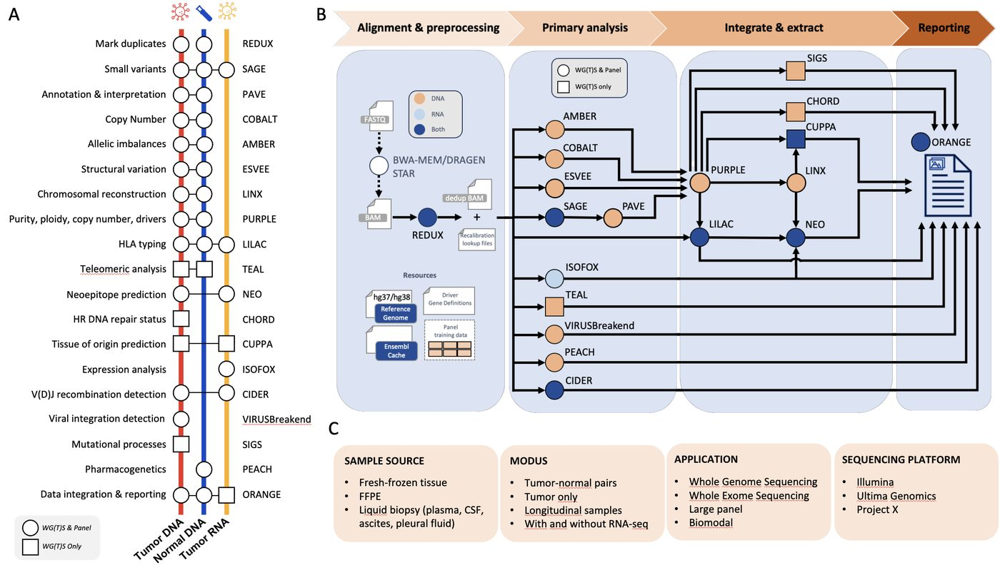
Illumina · Ultima Genomics · Roche SBX
Reported in the SEQUENCING TYPE field on the front page.
WGS · WES · Large panel · Biomodal
Drives which chapters and biomarkers can be computed.
Tumor–normal · Tumor-only · Longitudinal · ±RNA-seq
Reported in the SAMPLES field; gates the germline chapter.
Fresh-frozen · FFPE · Liquid biopsy
Plasma, CSF, ascites and pleural fluid are supported.
Report structure — the eight chapters
| Chapter | Contents |
|---|---|
| Summary page | Key drivers & genome-wide biomarkers; overall CIRCOS picture summarising molecular events |
| Somatic variants | Somatic small variants, copy number alterations, fusions, disruptions, viruses; somatic molecular signatures; plots of structural-variant-associated somatic drivers |
| Germline variants | Germline small variants, copy number alterations, disruptions & chromosomal aberrations; pharmacogenetics |
| RNA | High expression; fusions and novel splice junctions not detected in DNA |
| Immunology | HLA Class I and Class II alleles |
| Tissue of origin | Comprehensive report showing CUPPA classifiers |
| Quality control | Key metrics and plots of various QC quantities against a reference cohort |
| Purity & ploidy | Plots showing purity and ploidy inputs and fit diagnostics |
The germline chapter requires a matched normal, so it is omitted in tumor-only mode. The RNA chapter appears only when RNA-seq was analysed. Signatures and viruses are only included for WGS reports, not panels. Tissue of origin is currently WGS-only. The HR-deficiency score uses CHORD for WGS; for panels a per-panel vCHORD classifier must first be trained.
What makes something reportable: the driver gene panel
The content of the ORANGE Report is configured in the driver gene panel — a list of genes of interest plus a set of flags controlling which variant types should be reported for each gene. This can differ between cancer modalities, for example paediatric, haematological and solid cancers.
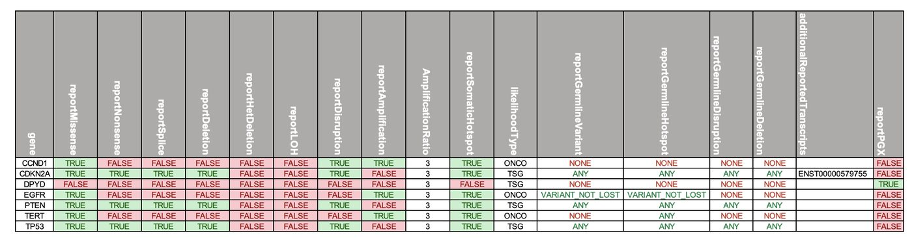
ONCO vs TSG — and why the label changes the maths
Each gene in the panel is configured as an ONCO (oncogene) or TSG (tumor suppressor gene). This directly changes how driver likelihood is calculated, because the two classes are broken in different ways:
- TSG — loss of function matters, so biallelic status is taken into account and genes with multiple mutations get additive likelihoods. Biallelic nonsense and canonical splice variants are given a likelihood of
1. - ONCO — gain of function matters, so in-frame indels outside repeat contexts are given a likelihood of
1. - For both classes, known pathogenic sites (hotspots) are given a likelihood of
1.
common/DriverGenePanel.{37,38}.tsv in the resource bundleReading conventions used throughout
| Convention | Meaning |
|---|---|
| Grey background row | Variant predicted to have a low likelihood of being a driver (<20%). Still reported, but de-prioritised. |
| Value in brackets | On the driver summary, the bracketed count is the high-confidence subset — e.g. small variants with driver likelihood >20%, or copy number events meeting the homozygous-deletion / amplification threshold. |
DRIVER = HIGH / LOW | Categorical driver call for copy number, fusion, disruption and virus tables. For small variants the DRIVER column is instead a continuous likelihood between 0 and 1. |
| Asterisk on a position | The variant is locally cis-phased with other reportable variants — they sit on the same physical allele. |
| Red vs blue in QC plots | Red = tumor sample; blue = normal (reference) sample. |
| Boxplots / ribbons | Distribution of the metric across the Hartwig reference cohort, not your sample. |
| Log scaling in LINX plots | Feature sizes are scaled by the log of their length so small- and large-scale effects are visible together. |
Purity and ploidy — the two numbers everything else depends on
Purity is the fraction of cells in the sequenced sample that are tumor cells. Ploidy is the average number of copies of each chromosome in those tumor cells (2 for a normal diploid genome).
Almost every derived quantity in the report is purity- and ploidy-adjusted: allele frequencies are corrected to what they would be in a pure tumor, copy numbers are absolute rather than relative, and clonality is judged against the fitted ploidy. If the purity fit is wrong, the copy numbers, biallelic calls and clonality calls downstream are all wrong with it — which is why the report devotes an entire chapter to purity and ploidy diagnostics.
02Guide to CIRCOS plots
The CIRCOS plot is the single most information-dense object in the report: a circular whole-genome view where each concentric ring is a different class of molecular event. Read it from the outside in.
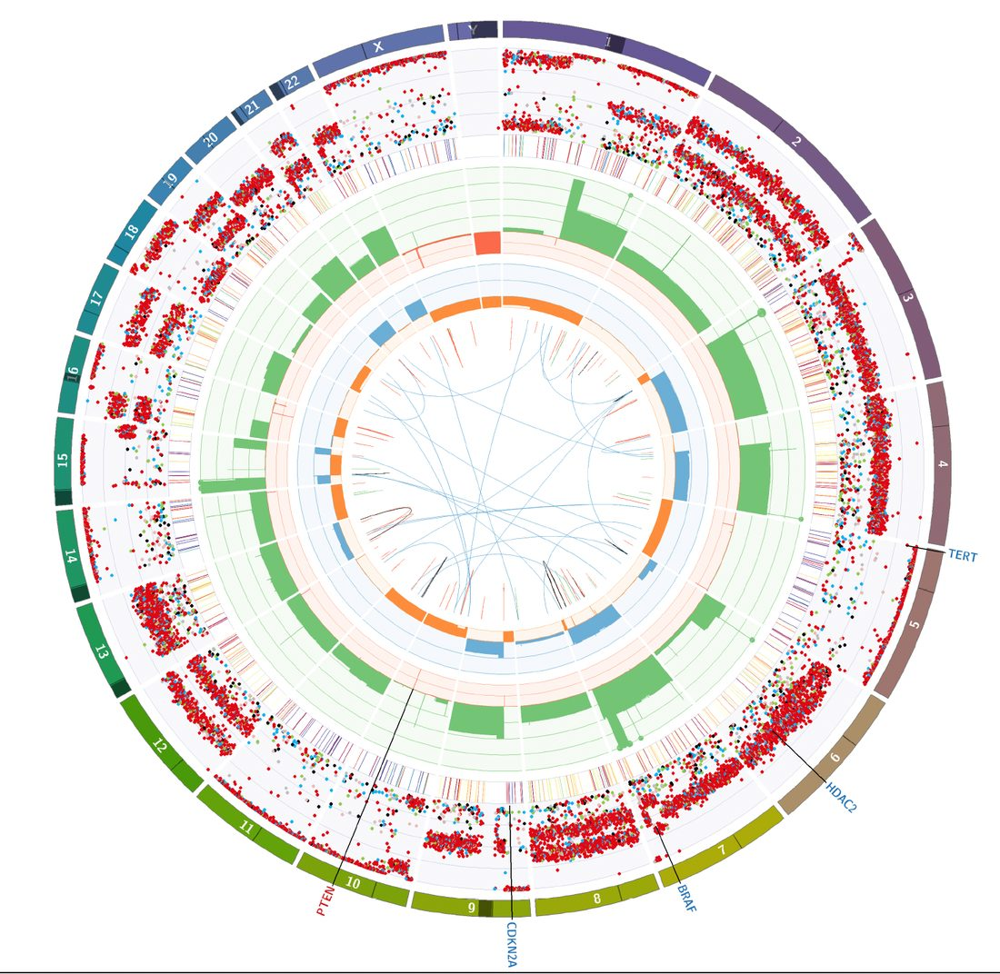
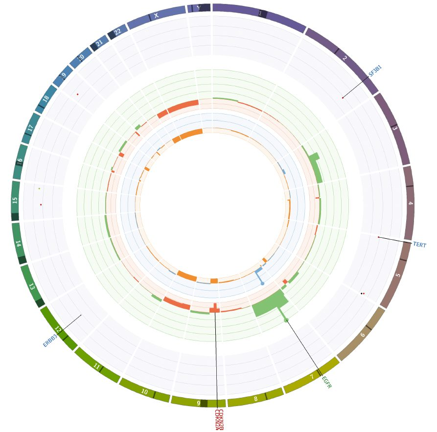
In a targeted report the CIRCOS is restricted to the panel footprint, so the SNV/INDEL rings look sparse and the structural variant centre is mostly empty. Absence of signal outside the panel regions is not evidence of absence.
Ring 0 — the chromosome map
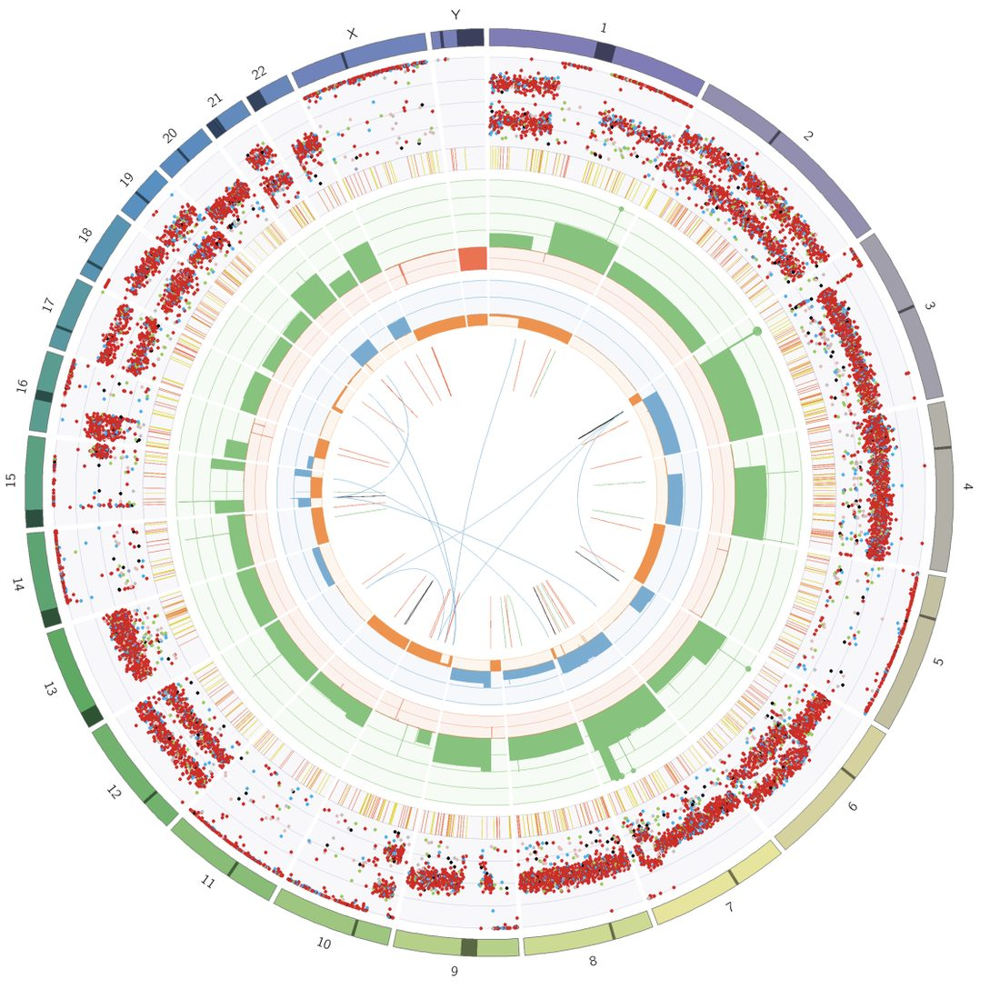
- All 22 autosomal chromosomes are numbered, plus X and Y, and are drawn to scale of their mappable size.
- Darker shaded areas represent gaps in the human reference genome — centromeres, heterochromatin and short arms. Nothing can be called there, so blank stretches inside dark bands are expected.
Why mappable size, not physical size
Short arms of acrocentric chromosomes (13, 14, 15, 21, 22), centromeric alpha-satellite and pericentromeric heterochromatin are largely absent or unresolvable in the reference assembly. Drawing chromosomes to mappable size keeps the angular scale honest: equal arc length means equal amount of callable genome, so variant density across the ring is directly comparable.
Rings 1–2 — SNVs and INDELs
The next layers show all tumor-observed variants — including exonic, intronic and intergenic regions — divided into an outer ring of single nucleotide variant allele frequencies and an inner ring of short insertion/deletion locations.
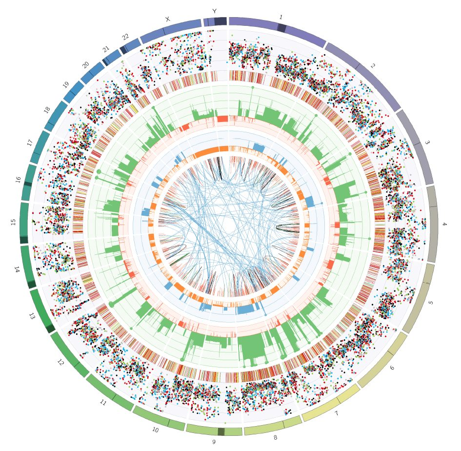
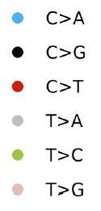
- Variant allele frequencies are corrected for tumor purity and scale from 0 to 100%.
- Each dot is a single variant, coloured according to the type of base change.
- INDELs are <50 bp and coloured: yellow for insertions, red for deletions, green for deletions with microhomology.
A high density of INDELs in the inner ring is suggestive of possible microsatellite instability. Melanomas with UV signatures are normally dominated by red dots (C>T); lung cancers with smoking signatures are predominantly blue (C>A).
Why base-change class is informative — mutational signatures
There are only six distinguishable pyrimidine-referenced substitution classes (C>A, C>G, C>T, T>A, T>C, T>G). Different mutational processes leave characteristically different mixtures of them, so the colour composition of the SNV ring is a low-resolution read of the sample's dominant mutational process — the same information that the signature allocation table quantifies properly.
Ring 3 — total copy number
The next layer shows all observed tumor purity-adjusted copy number changes, including both focal and chromosomal events.
- The scale ranges from 0 (complete loss) to 6 (high-level gains).
- If the absolute copy number is >6 it is shown as 6 with a green dot on the diagram.
- Gains are green; losses are red.
As a diploid organism we expect 2 copies of every autosome as baseline in normal tissue. Homozygous loss is normally highly localised in cancer — loss of the Y chromosome is a notable exception and appears as a whole-chromosome red block.
Ring 4 — minor allele copy number (MACN)
This layer represents the observed minor allele copy number across the chromosome.
- The expected normal MACN is 1 (one maternal, one paternal copy).
- Anything below 1 is shown as a loss and represents a loss of heterozygosity (LOH) event — orange.
- MACN above 1 indicates amplification of both A and B alleles — blue.
- The range of the chart is 0 to 3.
Minor allele copy number (MACN)
MACN is the specific copy count of the less frequent (or lost) allele at a given locus, distinguishing between different allelic configurations that total copy number analysis misses.
Total copy number cannot tell 1+1 apart from 2+0 — both are CN 2. MACN can: 1+1 has MACN 1, while 2+0 has MACN 0 and is copy-neutral LOH. This is why MACN is crucial for identifying allelic imbalance, loss of heterozygosity, and tumor-specific gains, and why it underpins the biallelic probability for small variants.
Why LOH matters clinically
Most tumor suppressors need both copies inactivated. A pathogenic germline variant in one BRCA1 allele plus somatic LOH of the other is the classic two-hit route to HR deficiency. LOH is therefore reported as a driver event in its own right for MMR- and HR-associated genes, and the genome-wide LOH proportion is reported as a biomarker.
Ring 5 (centre) — structural variants
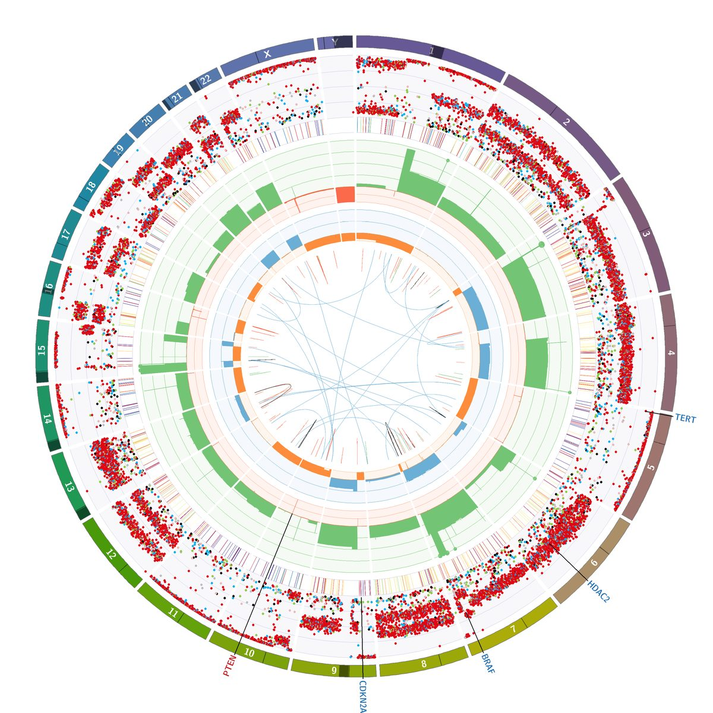
For local chromosomal alterations the length of the line is proportional to the log of the length of the variant, so a short intragenic deletion and a whole-arm event can be read on the same plot.
Structural variant types: DEL, DUP, INV, BND, SGL, COMPLEX
- DEL — deletion; the two breakends face each other and sequence between them is lost.
- DUP — tandem duplication; a segment is present in more than one copy, head-to-tail.
- INV — inversion; a segment is reversed in orientation.
- BND — breakend pair joining two different chromosomes, i.e. a translocation.
- SGL — single breakend; only one side of the junction could be resolved (the partner maps nowhere confidently, e.g. into repeat or viral sequence).
- COMPLEX — the junction is part of a cluster that LINX chained into a multi-breakpoint event rather than a simple two-breakend type.
03LINX structural variant plots
Where the CIRCOS plot shows the whole genome, LINX plots zoom in on one structural driver event at a time and reconstruct what the derivative chromosome actually looks like. The somatic chapter includes one plot per structural driver.
How to read a LINX plot
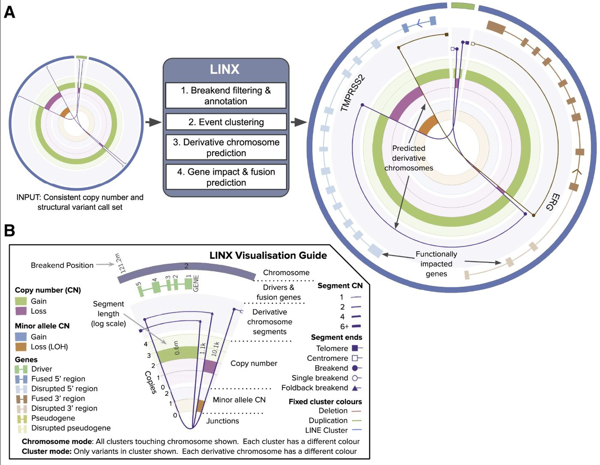
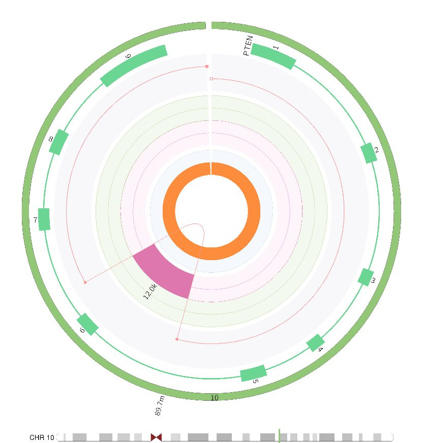
Example — homozygous disruption
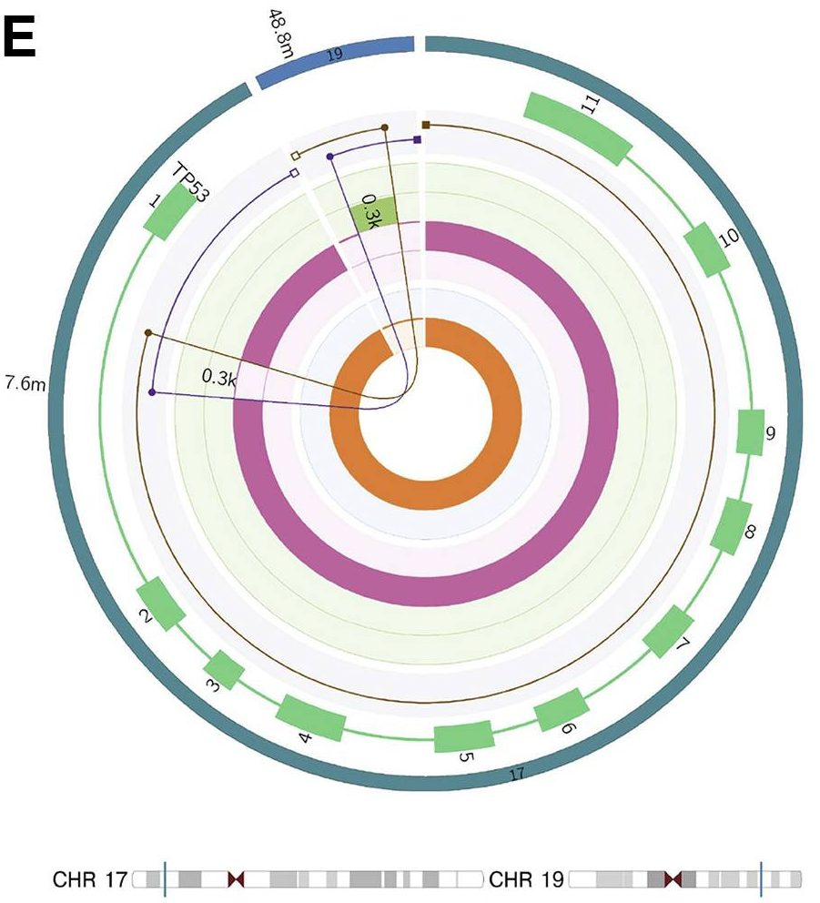
This is the case total copy number alone would miss: the gene is never deleted, average CN looks near-normal, but every physical copy is broken. LINX's chaining is what turns "two breakpoints near TP53" into "TP53 is homozygously disrupted" — a HIGH driver call in the gene disruptions table.
Example — a fusion
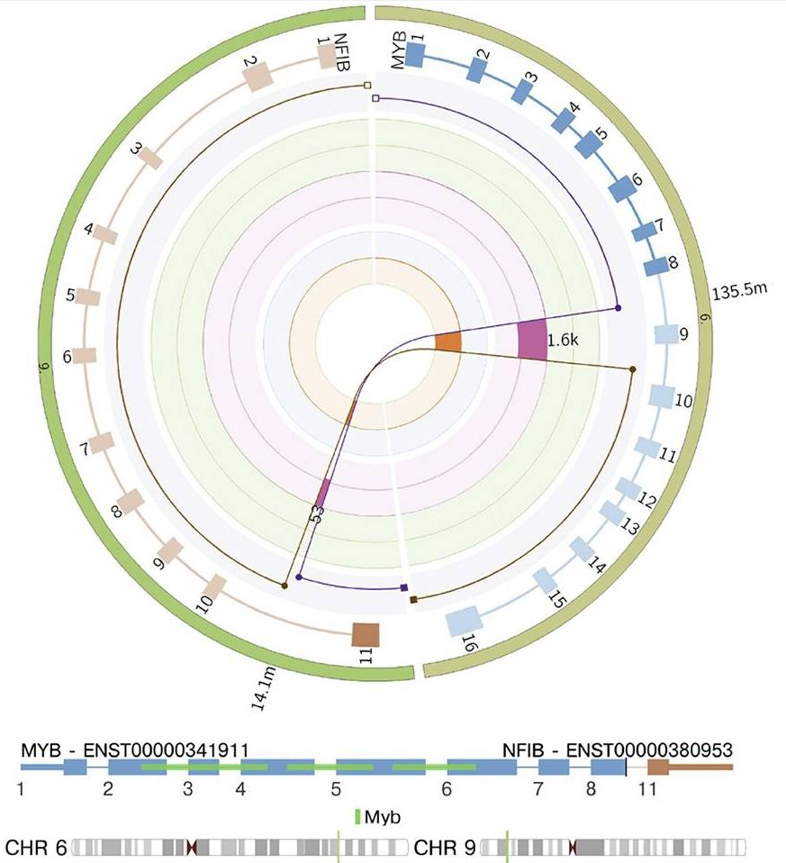
Examples — amplifications and deletions
| Call | Definition |
|---|---|
| Full gain | Copy number (CN) ≥ 3 × ploidy |
| Partial gain | Only part of the gene has CN ≥ 3 × ploidy |
| Full loss | CN < 0.5 |
| Partial loss | Only part of the gene has CN < 0.5 |
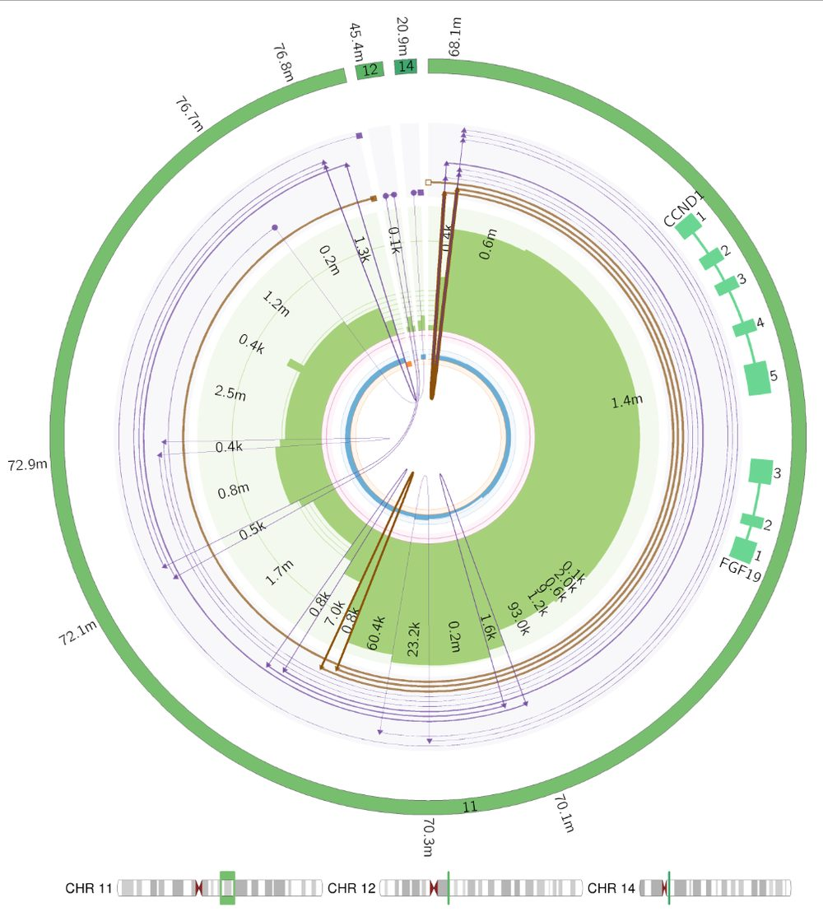
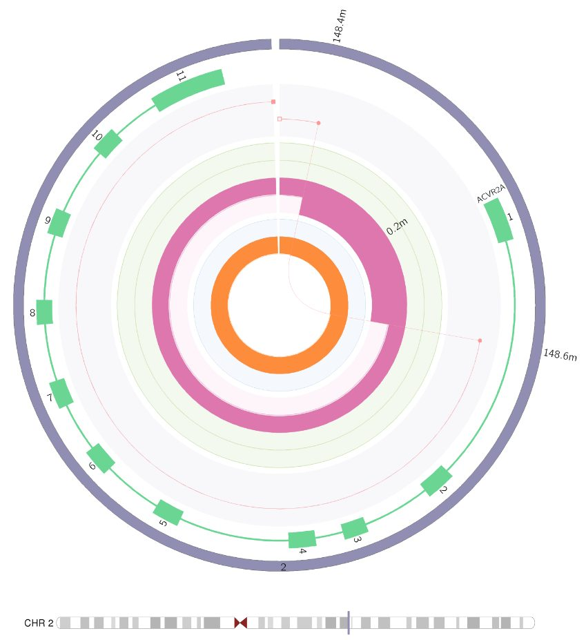
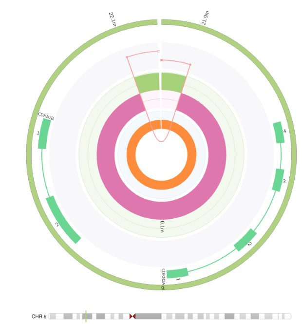
In a partial-loss example, only exon 1 may be completely lost (homozygous deletion) while the rest of the gene still has a wildtype copy (heterozygous deletion). The RANGE column in the copy number table carries exactly this distinction, and MIN CN vs MAX CN quantifies it.
The amplification threshold is 3× ploidy by default but may be set per gene in the driver gene panel.
04Summary page (front page)
The front page is the whole report compressed onto one sheet: who the sample is, whether it can be trusted, what the drivers are, the genome-wide biomarkers, and the CIRCOS overview.
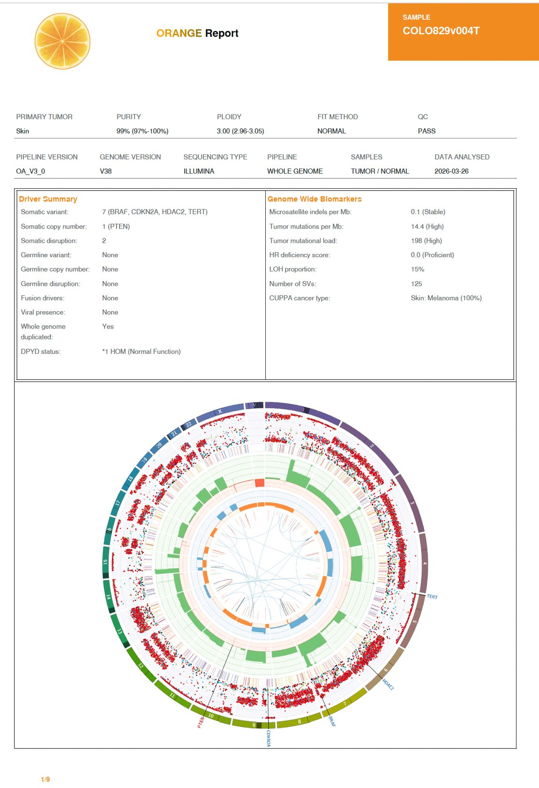
Sample details
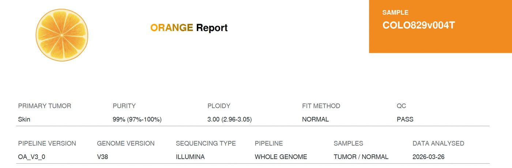
| Field | Description |
|---|---|
| Primary tumor | Tumor type as provided by the hospital — this is submitted metadata, not a pipeline prediction. Compare it against the CUPPA prediction. |
| Purity | % of tumor cells in the tumor sample. |
| Ploidy | Average number of chromosome copies in the tumor. |
| Fit method | Method used to fit purity & ploidy: NORMAL (based on aneuploidy), SOMATIC (using somatic small variants) or NO_TUMOR. |
| QC | Either PASS, or one or more WARN / FAIL reasons (see the table below). |
| Pipeline version | oncoanalyser version used to generate the analysis and report. |
| Sequencing type | Sequencing machine type for the data analysed: one of ILLUMINA, ULTIMA, SBX. |
| Pipeline | Either WHOLE GENOME or TARGETED. |
| Samples | Specifies the combination of TUMOR, NORMAL & RNA run. |
| Date analysed | Date the report was generated. |
Fit method — NORMAL vs SOMATIC vs NO_TUMOR
PURPLE's fit is primarily based on the aneuploidy in the sample: the pattern of depth-ratio and BAF segments constrains purity and ploidy jointly.
NORMAL— there was enough aneuploidy to fit purity and ploidy from copy number alone. This is the preferred outcome.SOMATIC— the sample has low aneuploidy, so the fit falls back to assuming ploidy = 2 and determining purity from the allele frequencies of somatic small variants. Copy number calls in these samples carry more uncertainty.NO_TUMOR— no fit with tumor purity above the detection floor could be found; pairs with theFAIL_NO_TUMORQC status.
See the sunrise plot to judge how well-constrained the chosen solution was.
QC warning and fail statuses
| Status | Meaning |
|---|---|
| WARN_DELETED_GENES | >280 genes are deleted genome-wide. |
| WARN_LOW_PURITY | Purity < 20%. |
| WARN_TINC | Tumor-in-normal contamination > 0.5%. |
| WARN_HIGH_COPY_NUMBER_NOISE | Sample has > 220 copy number segments unsupported by an SV. |
| WARN_GENDER_MISMATCH | Gender inferred from chrY copy number disagrees with gender inferred from chrX BAF. |
| FAIL_TINC | Tumor-in-normal contamination > 25%. |
| FAIL_CONTAMINATION | Human contamination > 10% — can also indicate chimerism. |
| FAIL_NO_TUMOR | No evidence of tumor purity > 8%. |
TINC — tumor in normal contamination
TINC is the presence of tumor DNA in the sample used as the germline reference — common with blood normals in haematological malignancies, high circulating tumor DNA, or nearby-tissue normals.
It is corrosive because the normal is what defines "not somatic". As tumor leaks into the normal, genuine somatic variants start to look germline and get filtered out, so sensitivity for somatic calls falls. Above 25% (FAIL_TINC) the somatic call set should not be trusted.
Why low purity degrades everything
At 20% purity, a heterozygous clonal somatic variant sits at ~10% VAF — close to the noise floor. Below that, three things break at once: variants drop below detection, copy number segment amplitudes shrink toward the diploid baseline so the fit becomes ambiguous, and biallelic/clonality probabilities widen to the point of being uninformative. WARN_LOW_PURITY should be read as "absence of findings is uninterpretable in this sample".
Driver summary
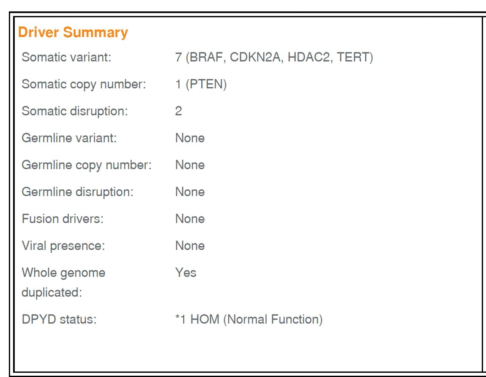
| Field | Description |
|---|---|
| Somatic variant | # of reportable small variants. Somatic variants shown in brackets have driver likelihood > 20%. |
| Somatic copy number | # of reportable amplifications & deletions. Shown in brackets if high driver likelihood — i.e. homozygous deletion (minCN < 0.5) or amplification exceeding N × ploidy (default N = 3). |
| Germline variant | # of reportable germline small variants. Needs normal |
| Germline copy number | # of reportable germline amplifications & disruptions.† Needs normal |
| Germline disruption | # of reportable germline disruptions. Needs normal |
| Somatic disruption | # of reportable somatic gene disruptions, as listed in the gene disruptions table. Present on the report page though not listed in the source manual's field table. |
| Fusion drivers | # of reportable pathogenic gene fusions. |
| Viral presence | List of viruses detected in the tumor sample. WGS only |
| Whole genome duplicated | Yes = whole genome doubling event detected; No = not detected. |
| DPYD status | Allele and zygosity of DPYD for pharmacogenetics purposes. Needs normal |
† Wording follows the source manual. Note that the corresponding germline amplifications & deletions table reports deletions, and germline disruptions have their own row — worth confirming against your pipeline version.
Whole genome duplication (WGD)
A WGD is a single catastrophic event that doubles the entire karyotype, pushing ploidy toward 4. It is one of the most common macro-events in solid tumors and it rescales the whole report: the diploid baseline is no longer 2, so amplification thresholds expressed as multiples of ploidy shift upward, and a copy number of 2 in a WGD tumor may represent a relative loss. This is why amplification is defined relative to ploidy (REL CN) rather than as an absolute copy number.
Genome-wide biomarkers
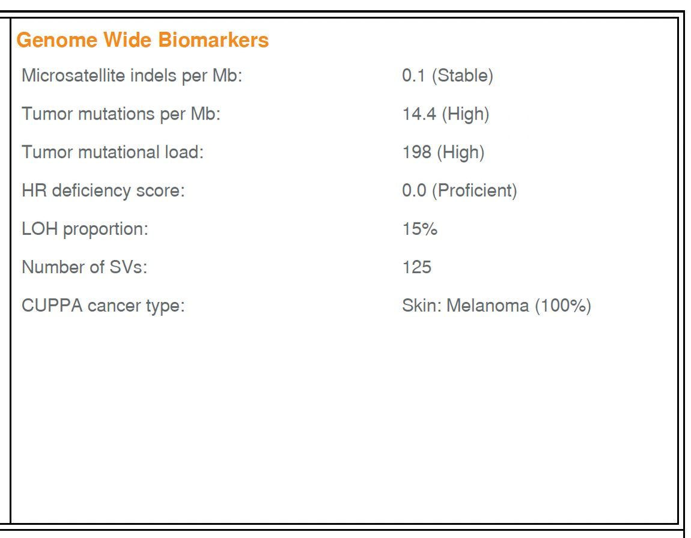
| Field | Description | Threshold |
|---|---|---|
| Microsatellite indels per Mb | # of indels in repeats in microsatellites across the genome, per Mb. | Unstable if ≥ 4‡ |
| Tumor mutations per Mb | # of all somatic variants across the genome per Mb (TMB). | High if ≥ 10, low if < 10 |
| Tumor mutational load | # of all somatic missense mutations across the genome (TML). | High if ≥ 140, low if < 140 |
| HR deficiency score | Likelihood of HR deficiency as assessed by CHORD from the molecular profile. | Proficient if < 0.5, else deficient |
| LOH proportion | Percentage of autosomes with loss of heterozygosity genome-wide. | — |
| Number of SVs | Total # of structural variants found in the sample. | — |
| CUPPA cancer type | Cancer type predicted by CUPPA (tissue of origin algorithm), with confidence in brackets. | See Tissue of origin |
‡ The source manual states the boundary as ≥ 4 = MSI, < 4 = MSS in the algorithm detail, but as > 4 in the summary table. This guide uses ≥ 4 throughout; confirm the exact comparison for borderline values.
MSI, TMB, TML and HRD are all estimated differently for panels than for WGS. A panel-derived TMB is an extrapolation from coding on-target regions, not a direct count. Do not compare a panel value against a WGS-derived threshold or cohort distribution without checking how it was computed.
Biomarker algorithms in detail
Microsatellite indels per Mb (MSI)
The biology: mismatch repair and microsatellites
Microsatellites are regions of short repetitive DNA. The DNA mismatch repair (MMR) system — MLH1, MSH2, MSH6 and PMS2 — detects and corrects replication errors. Polymerase slippage in repeats is exactly the error class MMR is built to fix, so if MMR is not working properly, mutations accumulate in the cell and repeat tracts change length.
Microsatellite status is an important predictive biomarker for immunotherapy response, because the resulting indels produce frameshifted neoantigens.
How MSI is computed — WGS vs targeted
Microsatellite status represents the number of somatic inserts and deletes in microsatellites per Mb.
- ≥ 4 is considered microsatellite instable (MSI).
- < 4 is microsatellite stable (MSS).
For WGS the rate of microsatellite indels is counted directly.
For targeted sequencing it is estimated by observing the error rate in microsatellites across all panel regions, for long homopolymers and dinucleotide repeats.
TMB and TML
Definitions and how they are derived
- Tumor mutational burden (TMB) is the density of all small variant mutations per Mb.
- Tumor mutational load (TML) is the count of missense mutations in the tumor genome-wide.
For WGS, oncoanalyser counts TMB & TML directly.
For targeted analyses, TMB & TML are estimated based on the rate of likely-somatic variants in the coding on-target regions.
Both TMB and TML are predictive biomarkers for immunotherapy.
Why two numbers for "how mutated is this tumor?"
TMB is a density over the whole genome and is dominated by non-coding passengers, which makes it a stable measure of mutational process intensity. TML is an absolute count restricted to missense changes, so it tracks the supply of potential neoepitopes more directly. They usually agree; when they diverge, it is informative — e.g. a high TMB with unremarkable TML suggests a mutational process concentrated outside coding regions.
HR deficiency (CHORD)
The biology: homologous recombination repair
Homologous recombination (HR) is an essential pathway for DNA double-strand break repair. Mutations in essential HR genes, including BRCA1 and BRCA2, may result in HR deficiency (HRD). HRD tumors depend on error-prone backup repair pathways, which is the basis of PARP-inhibitor and platinum sensitivity.
How the HRD score is predicted — CHORD and vCHORD
oncoanalyser predicts an HRD score between 0 and 1. > 0.5 is HRD-positive.
- For WGS, a logistic-regression classifier, CHORD, is used to predict HRD based on associated molecular indel and SV signatures — principally deletions with flanking microhomology and 1–100 kb duplications.
- For targeted analyses, an image-based classifier, visual CHORD (vCHORD), can be trained per panel to predict HRD.
Note that HRD is inferred from the genomic scar the tumor carries, not from the presence of a BRCA mutation — so an HRD-positive score with no HR gene variant is a legitimate and common result.
05Somatic variants
Small variants
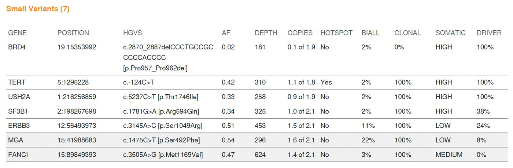
SOMATIC column is only shown in tumor-only mode.| Field | Description |
|---|---|
| GENE | Name of gene. |
| POSITION | Genomic coordinates. An asterisk indicates locally cis-phased with other reportable variants. |
| HGVS | cDNA and protein HGVS notation. |
| AF | Raw allelic frequency observed of allele — not purity-corrected. |
| DEPTH | Total read depth of coverage of the variant site. |
| COPIES | Predicted average number of copies of the allele, and total copy number at the variant location, in each tumor cell — i.e. adjusted for purity & ploidy. |
| HOTSPOT | The exact variant (chromosome, position, ref, alt) is a known pathogenic or likely pathogenic variant. |
| BIALLELIC | Probability that the variant is biallelic (no wildtype present) based on predicted copy number & purity. |
| CLONAL | Probability that the variant is clonal (present in every tumor cell) based on predicted copy number & purity. |
| SOMATIC | Probability that the variant is somatic based on predicted copy number & purity. Tumor-only only |
| RNA | Support and depth of coverage for the variant in RNA. Needs RNA |
| DRIVER | Predicted driver likelihood per gene, based on an algorithm trained on the Hartwig WGS database, depending on mutation type, sample TMB and biallelic status. |
AF vs COPIES — two ways of saying the same thing
AF is the raw observed fraction of reads carrying the alternate allele. It conflates three things: how many tumor cells carry the variant, how many copies of the allele they carry, and how much normal DNA dilutes the sample.
COPIES untangles them. It reports the variant copy number (VCN) — how many copies of the variant allele the average tumor cell has — alongside the total copy number at that locus, both after correcting for purity and ploidy. A clonal heterozygous variant in a diploid region gives 1 / 2; the same variant in a region amplified to 6 copies could give 3 / 6.
This is why AF alone can mislead: a 12% AF variant is either subclonal, or clonal in a 25%-purity sample. COPIES plus CLONAL tells you which.
HGVS notation
The standard for describing sequence variants relative to a reference transcript. The report shows both the coding (c.) and protein (p.) forms — for example c.1799T>A / p.Val600Glu. Transcript choice matters: PAVE annotates against the canonical Ensembl transcript unless the driver gene panel specifies otherwise, so the same variant can have different c. numbering in other databases.
Cis-phasing (the asterisk)
Two variants are in cis if they sit on the same physical DNA molecule, and in trans if on opposite alleles. SAGE phases variants that co-occur on the same reads.
This changes interpretation materially. Two truncating variants in trans in a tumor suppressor inactivate both copies — a biallelic hit. The same two variants in cis leave one allele intact. The asterisk therefore flags variants whose driver contribution should be assessed jointly, not independently.
Small variant algorithms in detail
Somatic likelihood Tumor-only
How tumor-only samples decide germline vs somatic
In TUMOR_ONLY mode there is no normal sample to subtract, so the likelihood that each variant is somatic is calculated by comparing the variant AF to the "expected" VAFs for both germline and somatic variants given the sample purity & ploidy.
- For somatic variants, the expected VAFs are those that would imply somatic VCN = {minor allele, major allele, or ≤1}.
- For germline variants, the expected VAFs are those that would imply tumor VCN = 100% (homozygous) or VCN = {minor allele or major allele}.
The minimum distance to each of the expected germline and somatic VAF sets is calculated and annotated as VAF_DIS_MIN in the VCF. The variant is then assigned a somatic likelihood:
| Call | Rule |
|---|---|
| HIGH | abs(somatic_vaf_distance) - abs(germline_vaf_dist) < -0.05 OR IS HOTSPOT |
| LOW | abs(somatic_vaf_distance) - abs(germline_vaf_dist) > 0.08 |
| MED | all other cases |
The SOMATIC column is a probability, not a filter. Variants with MED or LOW somatic likelihood may well be inherited. Tumor-only mode also means there is no germline chapter, since there is no normal sample to call against.
Biallelic likelihood
The probability formula
The biallelic probability at a given variant position is the total probability across two routes: a loss of heterozygosity at the position, P(LOH), and the probability of the variant being present on all remaining alleles conditional on the LOH status, P(BA|LOH).
P(BA) = P(LOH) × P(BA|LOH) + P(not LOH) × P(BA|not LOH)
Both terms depend on the fitted minor allele copy number and purity, which is why biallelic probabilities become unreliable in low-purity or SOMATIC-fit samples.
Why biallelic status is decisive for tumor suppressors
Knudson's two-hit model: a TSG only loses function when both copies are inactivated. A monoallelic nonsense variant in TP53 leaves a functional copy; the same variant with LOH of the other allele does not. PURPLE's driver logic reflects this directly — biallelic nonsense and canonical splice variants in a TSG are given driver likelihood 1, while the monoallelic equivalent is scored by the statistical model.
Clonal likelihood
Peak fitting in the variant copy number distribution
The clonal likelihood is estimated by iteratively identifying peaks in the somatic variant copy number distribution. For each peak, a copy number, a total density and a distribution are estimated. Peaks with variant copy number < 0.85 copies are marked as subclonal. For each variant, the likelihood that it belongs to a clonal versus subclonal peak is then calculated.
You can inspect this fit directly in the somatic clonality plot in the purity & ploidy chapter.
Clonal vs subclonal, and why it matters
A clonal variant is present in essentially every tumor cell, so it was acquired early and is carried by the whole population. A subclonal variant is present in only a fraction — a later event in one lineage.
A clonal driver is a target the whole tumor depends on. A subclonal resistance mutation is a warning that a fraction of cells is already primed to escape. Both matter, differently.
Driver likelihood
The full driver likelihood model
A driver likelihood estimate between 0 and 1 is calculated for each small variant in the gene panel.
Step 1 — automatic likelihood of 1. Hotspot mutations, and biallelic nonsense and splice mutations for tumor suppressor genes (TSG), are given a likelihood of 1. In-frame mutations outside repeat contexts for oncogenes are also automatically given a likelihood of 1.
Step 2 — dN/dS excess. The remaining point mutation variants are estimated based on the dN/dS (rate of non-synonymous to synonymous mutations) in the Hartwig WGS pan-cancer cohort, per variant type (missense, nonsense, splice or INDEL). Genes with an excess of non-synonymous mutation — based on calculated dN/dS rates and after allowing for the already-assigned drivers — will have a driver likelihood > 0.
Step 3 — Bayesian, sample-specific. Any remaining point mutations are assigned a driver likelihood between 0 and 1 using a Bayesian statistic that accounts for the type of variant observed and the mutational load of the sample:
P(Driver|Variant) = P(Driver) / ( P(Driver) + P(Variant|Non-Driver) × (1 - P(Driver)) )
where P(Driver) is assumed constant across samples:
P(Driver) = (# residual unallocated drivers in gene) / (# of samples in cohort)
and P(Variant|Non-Driver) — the probability of observing n or more passenger variants of a particular variant type in a sample in a given gene — is assumed to vary according to tumor mutational burden and is modelled as a Poisson process:
P(Variant|Non-Driver) = 1 - Poisson( λ = TMB(Sample)/TMB(Cohort) × (# passenger variants in cohort), k = n-1 )
The driver likelihood algorithm is currently trained only on adult solid tumors. dN/dS would need to be retrained to be suitable for haematological or paediatric tumors. Driver likelihoods in those settings should be treated as uncalibrated.
dN/dS — how selection is detected
Synonymous mutations do not change the protein, so they accumulate at roughly the neutral rate. Non-synonymous mutations do, so if a gene is under positive selection in cancer it will carry more non-synonymous changes than the neutral expectation. The ratio dN/dS quantifies that excess.
The consequence for reading the report: driver likelihood is sample-context-dependent. The same missense variant in the same gene scores lower in a hypermutated sample, because in a genome with thousands of passengers, one more missense hit is less surprising.
Amplifications & deletions
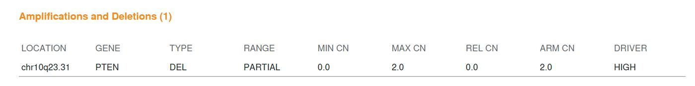
MIN CN against MAX CN to see whether the event covers the whole gene, and REL CN against ARM CN to see whether it is focal or arm-level.| Field | Description |
|---|---|
| LOCATION | Chromosome & band of the gene. |
| GENE | HGNC gene name. |
| TYPE | AMP (amplification), DEL (homozygous deletion), HET_DEL (heterozygous deletion) or LOH (copy-neutral loss of heterozygosity). |
| RANGE | Either FULL (full gene is impacted) or PARTIAL (part of the gene is impacted). |
| MIN CN | Minimum exonic copy number across the gene. |
| MAX CN | Maximum exonic copy number across the gene. |
| REL CN | Relative copy number of the gene compared to tumor ploidy (= MIN_CN / PLOIDY). |
| ARM CN | Mean copy number of the chromosome arm of the gene. Can be used to infer whether the CN event is focal or arm-level. |
| DRIVER | HIGH for DEL, or AMP with REL_CN > threshold. LOW for HET_DEL, LOH, and AMP with 85% × threshold < REL_CN < threshold. |
By default, LOH is only reported for MMR-deficiency- and HRD-associated genes. The amplification threshold is 3× ploidy by default but may be set per gene in the driver gene panel.
Focal vs arm-level — use ARM CN
A gene sitting at CN 6 inside an arm whose mean CN is also ~6 has been carried along by a whole-arm gain; the gene was probably not the target of selection. The same gene at CN 6 on an arm averaging CN 2 is a focal amplification — a sharp, localised event, far more likely to be a driver.
Comparing REL CN (gene vs ploidy) with ARM CN (arm vs ploidy) is the quickest way to make this call, and it is why the report includes a separate arm copy number table.
Fusions
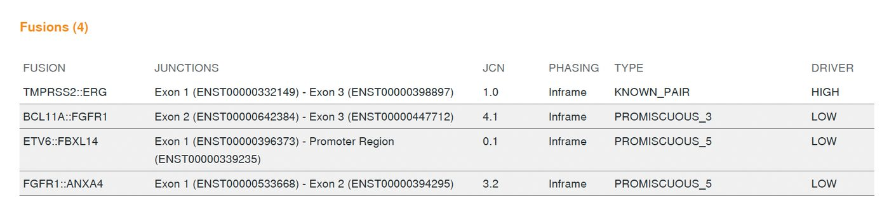
JUNCTIONS spells out the exact transcript and exon/intron context on both sides of the fusion.| Field | Description |
|---|---|
| FUSION | Fusion gene pair. |
| JUNCTIONS | 5′ partner context and Ensembl transcript, and 3′ partner context and transcript. Context may be Exon, Intron, Promoter, Upstream or Downstream. |
| JCN | Junction copy number. |
| PHASING | Either inframe (the fusion genes are transcribed in frame), out-of-frame, or skipped exons. |
| TYPE | For fusions matching the Hartwig fusion knowledgebase: KNOWN_PAIR (curated pathogenic gene fusions), KNOWN_ENHANCER_PAIR (curated IG, TCR or BCL11B rearrangements), or KNOWN_EXON_DEL_DUP (curated pathogenic deletions & duplications). PROMISCUOUS_3 and PROMISCUOUS_5 rearrangements involving curated promiscuous 3′ and 5′ partners are also shown. |
| RNA FRAGS | Total fragment support for the fusion in RNA. Needs RNA |
| DRIVER | HIGH if a KNOWN fusion type; LOW if a PROMISCUOUS type. |
Junction copy number (JCN)
JCN is the number of copies of the structural variant present in each tumor cell — the copy number of the junction itself rather than of the flanking sequence. A JCN near the sample ploidy indicates a clonal rearrangement present on all copies; a JCN well below 1 suggests a subclonal rearrangement, or one carried on only a fraction of an amplified region.
Phasing: inframe, out-of-frame, skipped exons
A fusion only produces a chimeric protein if the reading frame is preserved across the junction.
- Inframe — the 3′ partner's codons continue in the correct phase, so a fusion protein is plausible.
- Out-of-frame — downstream codons are shifted, usually producing a truncated or nonsense-mediated-decay product. Still reported, because it can inactivate the 3′ gene.
- Skipped exons — frame is restored by omitting one or more exons. LINX explicitly allows for this when testing phasing.
For exonic-to-exonic fusions, exact base phasing is also checked, not just exon-boundary phase.
Promiscuous 5′ / 3′ partners
Some genes recur as fusion partners with many different counterparts — e.g. a 3′ kinase domain that becomes oncogenic under whatever promoter it lands behind. The knowledgebase curates these as promiscuous partners, so a novel pairing involving one of them is reported even though the specific pair has never been described.
Because the pair itself is uncurated, these get LOW driver likelihood. A promiscuous call with strong RNA support deserves more attention than one without.
When is a fusion reportable?
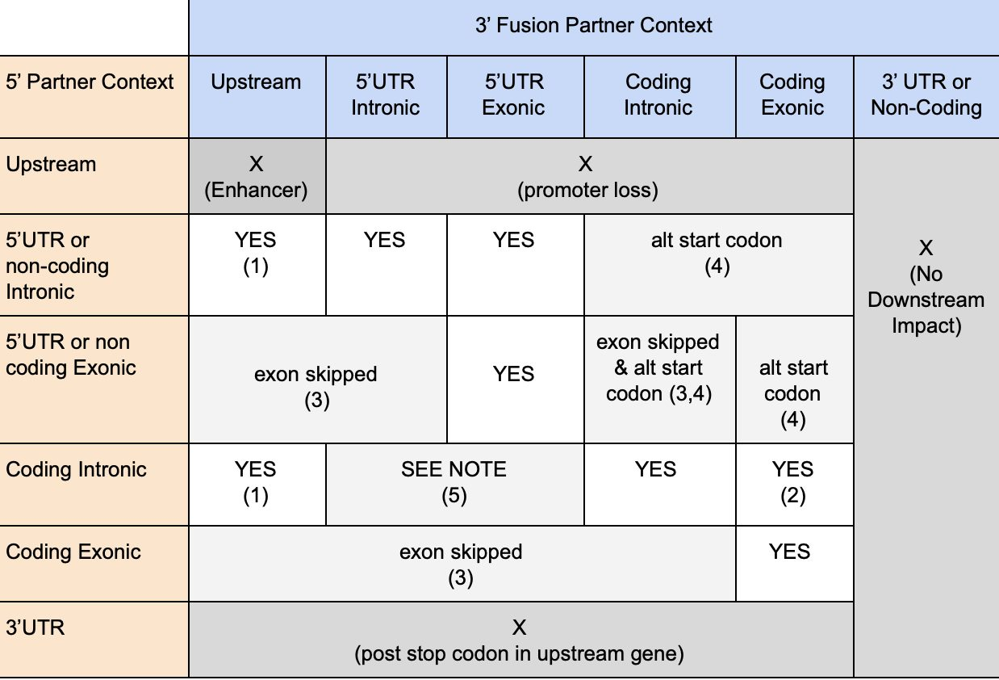
Essential features for a fusion to be reportable:
- The 3′ gene partner must have coding bases.
- The 5′ gene partner transcript must have one of the following Ensembl biotypes:
protein_coding,retained_intron,processed_transcript,nonsense_mediated_decay,lincRNA. - The upstream breakend must fall within the 5′ partner transcript and be disruptive to the transcript.
- The downstream breakend must fall either within the 3′ gene or within 100 kb upstream.
- The combined length of all segments in the chain must be less than 150 kb.
- The SV or chain must join appropriate contexts of the 5′ and 3′ genes, and for coding regions must be inframe after allowing for any skipped exons. For exonic-to-exonic fusions, exact base phasing is also checked.
Different reportability rules apply to enhancer rearrangements and exon deletions or duplications. Full details, including the numbered notes in the context matrix above, are on GitHub: LINX › clustering of SVs into events.
Gene disruptions
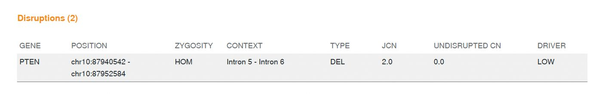
UNDISRUPTED CN is the key column: if it drops to zero, no intact copy of the gene remains.| Field | Description |
|---|---|
| GENE | HGNC name of gene. |
| POSITION | Exact breakpoints of breakends in the reference genome. |
| ZYGOSITY | HET (heterozygous — has wildtype remaining) or HOM (homozygous — no wildtype remaining). |
| CONTEXT | Location of the start and end of the disruption in the gene. If only one side of the junction impacts the gene, only that context and the orientation of the breakpoint relative to the gene are shown. |
| TYPE | Structural variant type: one of DEL, DUP, INV, BND, SGL, COMPLEX. |
| JCN | Junction copy number — number of copies of the structural variant present in each tumor cell. |
| UNDISRUPTED CN | Number of copies of the gene unaffected by this disruption in each tumor cell. |
| DRIVER | LOW for heterozygous; HIGH for homozygous disruptions. |
Partial gene deletions and amplifications may also be reportable as disruptions — so the same underlying event can legitimately appear in both the copy number and disruption tables.
Viruses WGS only
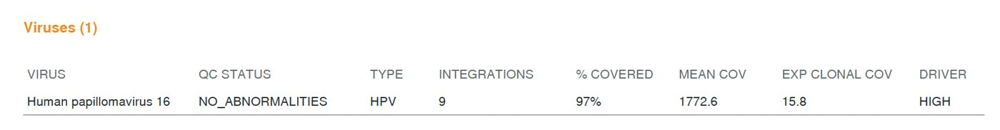
INTEGRATIONS distinguishes an integrated virus from one merely present in the sample.| Field | Description |
|---|---|
| VIRUS | Detailed name of virus. |
| QC STATUS | NO_ABNORMALITIES if fine; otherwise one of LOW_VIRAL_COVERAGE, EXCESSIVE_VIRAL_COVERAGE, ASSEMBLY_DOWNSAMPLED, CHILD_TAXID_REFERENCE, UNCLEAR_TAXID_ASSIGNMENT. |
| TYPE | Reportable virus type — see the supported list below. |
| INTEGRATIONS | Number of detected integrations of this virus into the tumor genome. If 0, the virus is present but no integration site into the host DNA could be detected. |
| % COVERED | Percentage of the viral genome detected in the tumor sample. |
| MEAN COV | Average coverage of the viral genome detected in the tumor sample. |
| EXP CLONAL COV | The expected clonal coverage assuming the virus is clonally integrated only once in the tumor DNA. |
| DRIVER | Likelihood of being a driver. |
Human papillomavirus (HPV)
Epstein–Barr virus (EBV)
Hepatitis B virus (HBV)
Merkel cell polyomavirus (MCV)
Human herpesvirus 8 (HHV-8)
Viruses are only detected in WGS-based reports, not panels — detection relies on reads that fail to map to the human reference, which a targeted capture largely discards.
Reading MEAN COV against EXP CLONAL COV
EXP CLONAL COV is the coverage you would expect if exactly one copy of the virus were integrated in every tumor cell. Comparing observed MEAN COV against it is a rough clonality/copy check: much higher suggests multiple integrated copies or episomal virus, much lower suggests the virus is present in only a subclone or as free contaminating sequence. Combined with INTEGRATIONS = 0, low coverage usually points to a bystander rather than a driver.
Arm copy number
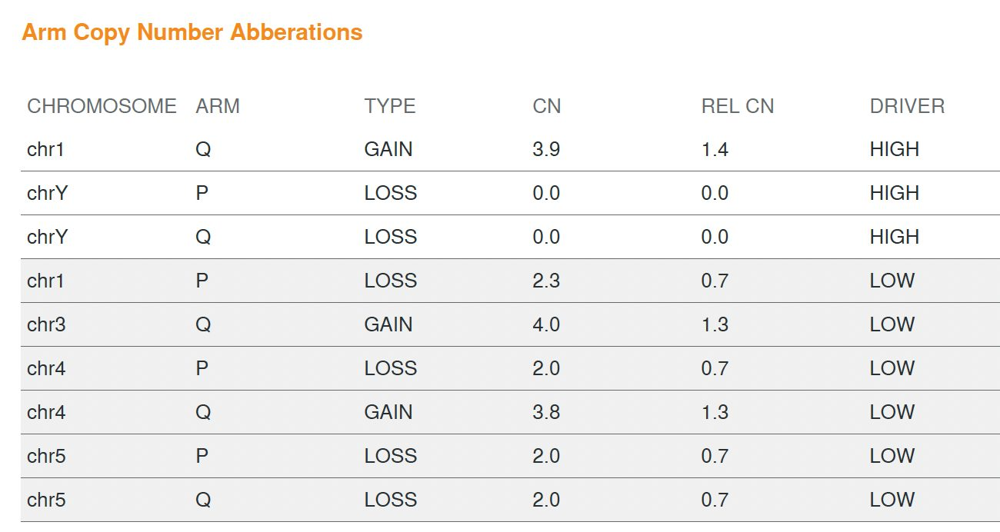
| Field | Description |
|---|---|
| CHROMOSOME | Chromosome with gain or loss. |
| ARM | Short (P) or long (Q) arm. |
| TYPE | GAIN or LOSS. |
| CN | Average copy number of the chromosome arm. |
| REL CN | Average arm copy number relative to tumor ploidy. For male X & Y chromosomes, CN is relative to ploidy / 2. |
| DRIVER | HIGH if GAIN with REL CN ≥ 1.4× or LOSS with REL CN ≤ 0.6×. LOW if GAIN ≥ 1.25× or LOSS ≤ 0.75× REL CN. |
Mutational signatures WGS only
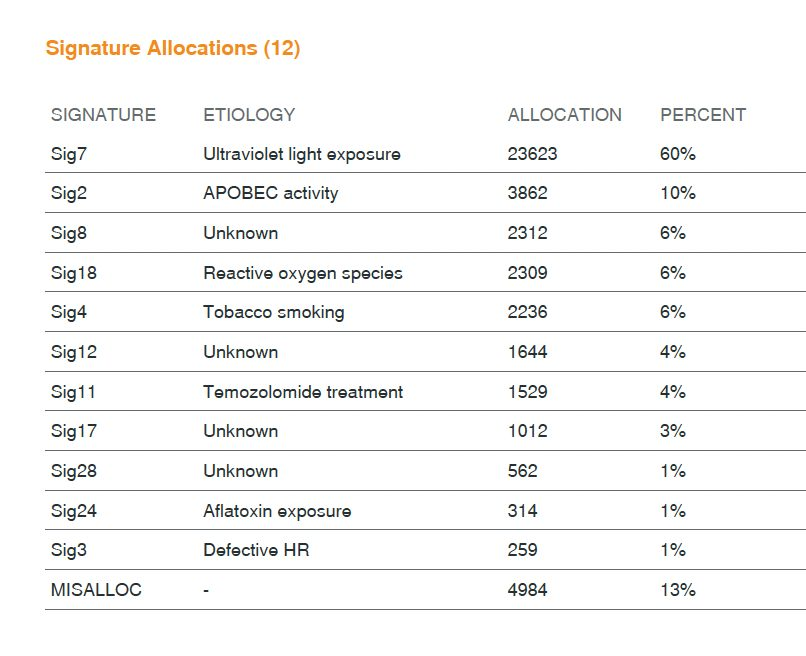
MISALLOC row is the residual.| Field | Description |
|---|---|
| SIGNATURE | COSMIC v2 SBS signature — see COSMIC signatures v2. |
| ETIOLOGY | Proposed etiology of the SBS signature. |
| ALLOCATION | # of somatic variants allocated to the signature. |
| PERCENT | % of somatic variants allocated to the signature. |
A signature may be significant if it contains either >20% or >2000 somatic variants. MISALLOC counts the number of variants that could not be assigned to a known signature — a large MISALLOC fraction means the fit is poor and individual allocations should be read cautiously.
Signatures are only included for WGS reports. The report uses the COSMIC v2 catalogue (signatures 1–30); note that COSMIC's own current release is v3.x, so signature numbering will not match the live COSMIC site — use the v2 archive page for etiologies.
What a mutational signature is
Each mutational process leaves a characteristic distribution across the 96 trinucleotide substitution types (6 substitution classes × 4 possible 5′ bases × 4 possible 3′ bases). Signature analysis decomposes a tumor's observed 96-type spectrum into a weighted sum of these reference distributions, so the output is an attribution — "this many mutations look like UV damage" — not a measurement of exposure.
That framing matters when reading the table: an allocation of a few hundred variants to a signature is well within the noise of the decomposition, which is exactly what the >20% / >2000 rule of thumb is guarding against.
06Germline variants Needs normal
This entire chapter requires a matched normal sample. In tumor-only reports it is absent, and inherited variants instead appear (with uncertainty) inside the somatic table with a low SOMATIC probability.
Germline small variants
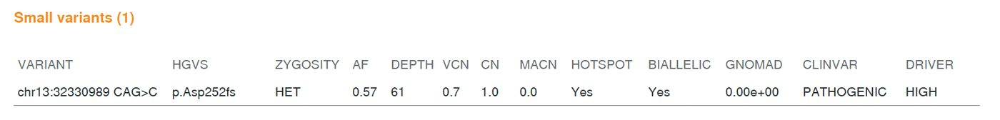
AF, DEPTH and COPIES describe the tumor sample — only ZYGOSITY describes the germline genotype.| Field | Description |
|---|---|
| GENE | Name of gene. |
| VARIANT | Genomic coordinates. An asterisk indicates locally cis-phased with other reportable variants. |
| HGVS | cDNA and protein HGVS. |
| ZYGOSITY | Genotype in the normal sample: HET or HOM. |
| AF | Raw allelic frequency observed of the allele in the tumor sample. |
| DEPTH | Total depth of coverage of the variant site in the tumor sample. |
| COPIES | Predicted number of copies of the variant allele in each tumor cell, and predicted tumor copy number at the variant location in each tumor cell. |
| HOTSPOT | The exact variant is a known pathogenic or likely pathogenic germline variant. |
| BIALLELIC | Probability that the variant is biallelic (no wildtype present) in the tumor, based on predicted copy number & purity. |
| GNOMAD | gnomAD population frequency of the variant. |
| CLINVAR | ClinVar pathogenic status for variants which match ClinVar. |
| DRIVER | Set to HIGH for pathogenic germline small variants. Other variants are not reported. |
The two-hit read: germline variant + somatic BIALLELIC
The most consequential row in this table is a pathogenic HET germline variant in a tumor suppressor with a high BIALLELIC probability in the tumor. That combination says: the patient inherited one broken copy, and the tumor lost the other — the classic two-hit inactivation, and the mechanism behind most HRD arising from germline BRCA1/2.
Note the asymmetry deliberately built into the table: zygosity is germline, but biallelic status is tumor, because that is where the second hit happens.
gnomAD and ClinVar
gnomAD (Genome Aggregation Database) gives the allele frequency in large reference populations. A variant common in the population is very unlikely to be a high-penetrance cancer predisposition allele, so gnomAD frequency is the first sanity check on any germline call.
ClinVar is the NCBI archive of submitted clinical interpretations of variants. The report surfaces the ClinVar pathogenic status where the variant matches — it is an aggregation of others' assertions, of varying review quality, not an independent classification by Hartwig.
Reportable germline variants are heritable and may have implications for relatives. Local policy on incidental germline findings, consent and clinical genetics referral applies — ORANGE reports them because they are analytically relevant, not because they have been clinically confirmed.
Germline amplifications & deletions
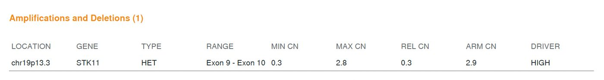
TYPE here is the germline zygosity, unlike the somatic table where it is the event class.| Field | Description |
|---|---|
| LOCATION | Chromosome arm and band. |
| GENE | HGNC gene name. |
| TYPE | Zygosity in the germline — either HET (heterozygous) or HOM (homozygous). |
| RANGE | Either FULL gene or the exon range affected. |
| MIN CN | Minimum exonic copy number across the gene in tumor cells. |
| MAX CN | Maximum exonic copy number across the gene in tumor cells. |
| REL CN | MIN CN divided by ploidy of tumor. |
| ARM CN | Average copy number of the arm of the gene. |
| DRIVER | HIGH or LOW — currently always set to HIGH for germline amplifications and deletions. |
Germline disruptions
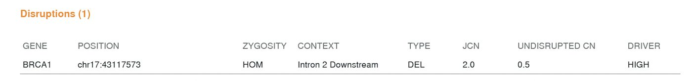
| Field | Description |
|---|---|
| GENE | HGNC gene name. |
| POSITION | Chromosome and position of the disruptive breakend(s). |
| ZYGOSITY | Zygosity of the disruption in the germline sample. |
| CONTEXT | Location of the start and end of the disruption in the gene. If only one side of the junction impacts the gene, only that context and the orientation of the breakpoint relative to the gene are shown. |
| TYPE | Structural variant type: one of DEL, DUP, INV, BND, SGL, COMPLEX. |
| JCN | Junction copy number — copies of the structural variant present in each tumor cell. |
| UNDISRUPTED CN | Number of copies of the gene unaffected by this disruption in each tumor cell. |
| DRIVER | LOW for heterozygous, HIGH for homozygous disruptions. |
Chromosomal aberrations
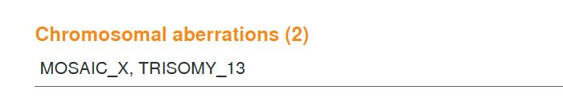
Identifies any known chromosomal aberrations in the germline sample. Supported aberrations:
| Aberration | Chromosome affected |
|---|---|
| MOSAIC_X | X |
| KLINEFELTER | X |
| TRISOMY_<CHR> | X, 21, 13, 18, 15, 9P |
| TETRASOMY_9P | 9P |
Sex-chromosome aberrations such as MOSAIC_X and KLINEFELTER are a common benign explanation for a WARN_GENDER_MISMATCH QC flag — chrY copy number and chrX BAF genuinely disagree because the constitutional karyotype is not XX or XY. Check this table before treating the warning as a sample swap.
Pharmacogenetics
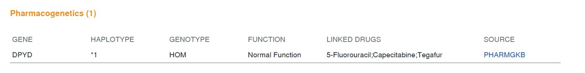
| Field | Description |
|---|---|
| GENE | HGNC gene name. |
| HAPLOTYPE | Specific haplotype allele found in the germline sample. |
| GENOTYPE | Zygosity of the haplotype in the germline — either HET or HOM. |
| FUNCTION | Efficacy of the respective enzymes in the haplotype. |
| LINKED DRUGS | Specific drugs linked to the efficacy of the respective enzyme. |
| SOURCE | Source of the efficacy data. |
The pharmacogenetics table is limited to DPYD. Its status also appears as DPYD status on the front-page driver summary.
Why DPYD is the one that is reported
DPYD encodes dihydropyrimidine dehydrogenase, the enzyme that clears roughly 80% of an administered fluoropyrimidine dose (5-FU, capecitabine). Reduced-function haplotypes cause the drug to accumulate, and carriers face a substantially elevated risk of severe — occasionally fatal — toxicity at standard doses. Dose reduction guidance for the common reduced-function alleles is well established, which makes DPYD one of the few pharmacogenes with an actionable, guideline-backed intervention.
07RNA Needs RNA
The RNA sample is optional in oncoanalyser. Where RNA is available it also adds columns to other tables — RNA support on small variants, RNA FRAGS on fusions and HLA alleles.
RNA QC
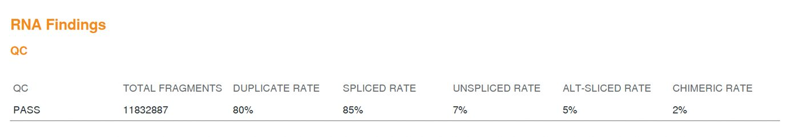
| Field | Description |
|---|---|
| QC | QC status of the RNA sample. |
| TOTAL FRAGMENTS | Total fragments in the RNA sample. |
| DUPLICATE RATE | Rate of duplicates in the RNA sample. |
| SPLICED RATE | Proportion of genic fragments supporting normal 'spliced' transcripts. |
| UNSPLICED RATE | Proportion of genic fragments supporting non-splice transcripts — i.e. fragments partially or fully supporting intronic regions of the gene, which may reflect pre-spliced RNA transcripts. |
| ALT-SPLICED RATE | Proportion of genic fragments supporting alternate 'spliced' transcripts — i.e. supporting novel splicing but within 500 kb of the gene with both splice sites on the same strand. |
| CHIMERIC RATE | Proportion of genic fragments supporting chimerically spliced transcripts — i.e. with the other splice site either inverted, inter-chromosomal, or more than 500 kb from the gene. |
RNA QC statistics are currently reported separately from the main QC report, which is DNA only. Check both.
What the rates tell you about library quality
The four rates are a compositional profile of the library. A high unspliced rate suggests substantial pre-mRNA or intronic carry-over — typical of degraded or DNA-contaminated input. A high chimeric rate can reflect genuine rearrangement burden, but also library artefacts from template switching, so it should be read alongside DNA-level SV counts. A high duplicate rate with low total fragments means effective library complexity is lower than the raw fragment count suggests, which depresses sensitivity for the fusion and splice-junction sections below.
High gene expression
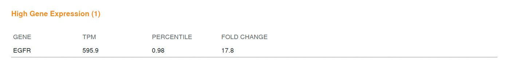
| Field | Description |
|---|---|
| GENE | HGNC gene name. |
| TPM | Estimated transcripts per million for gene expression. |
| PERCENTILE | TPM percentile compared to the Hartwig pan-cancer WTS cohort. |
| FOLD CHANGE | TPM divided by the median of the Hartwig pan-cancer WTS cohort. |
High expression is reported if either: TPM is greater than the 98th percentile pan-cancer and log₂(fold change) > 1; or log₂(fold change) > 2.3.
TPM — transcripts per million
A within-sample normalisation: read counts per gene are divided by transcript length, then scaled so all genes sum to one million. This makes expression comparable across genes within a sample and, with the caveat that library composition differs, roughly comparable across samples.
Because the comparison here is against a pan-cancer cohort rather than a matched tissue cohort, a gene physiologically high in the tumor's tissue of origin can appear as an outlier without being biologically remarkable. Read the percentile with the CUPPA tissue prediction in mind.
Fusions detected in RNA, not DNA
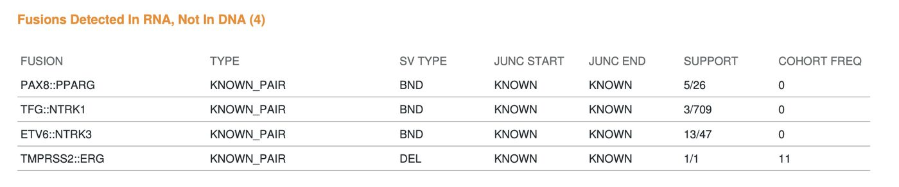
RNA FRAGS column.| Field | Description |
|---|---|
| FUSION | Gene names of fused genes: <5′ partner>::<3′ partner>. |
| TYPE | KNOWN (present in the fusion knowledgebase) or PROMISCUOUS (5′ or 3′ partner matches a promiscuous fusion gene). |
| SV TYPE | Type of structural variant causing the fusion (BND = translocation). |
| JUNC START | KNOWN (matches known exon boundary), CANONICAL (matches canonical splice sequence) or NONE (other). |
| JUNC END | As above, for the end of the junction. |
| SUPPORT | # of fragments supporting, and total depth at, the junction boundary. |
| COHORT FREQ | # of observations in the Hartwig WTS cohort. |
Why RNA finds fusions DNA misses — and vice versa
RNA sees the expressed product. It can therefore detect a fusion whose DNA breakpoint sits in a large repetitive intron that short-read DNA cannot resolve, and it confirms that the fusion is actually transcribed. But it is blind to fusions in genes not expressed in that tissue, and its sensitivity scales with expression level.
DNA sees the rearrangement, whether or not it is transcribed. The two are complementary, which is why the report keeps them in separate tables rather than merging them.
COHORT FREQ is the practical artefact filter: a junction seen in many cohort samples is far more likely to be a recurrent technical artefact or an unannotated normal transcript than a private driver event.
Novel splice junctions
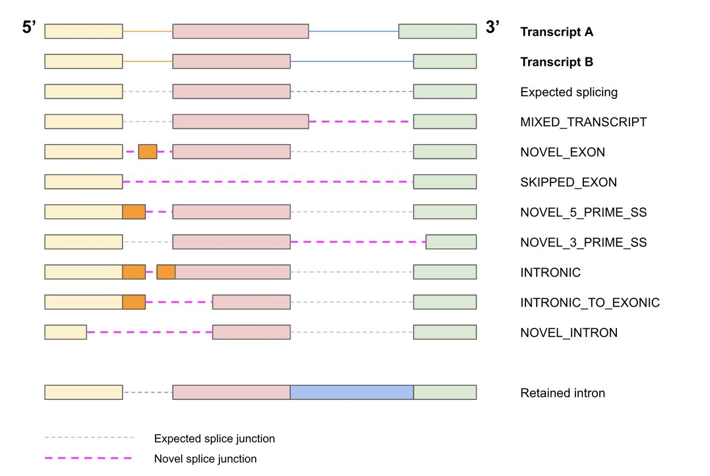
TYPE column refers to these categories: MIXED_TRANSCRIPT, NOVEL_EXON, SKIPPED_EXON, NOVEL_5_PRIME_SS, NOVEL_3_PRIME_SS, INTRONIC, INTRONIC_TO_EXONIC, NOVEL_INTRON, plus retained intron.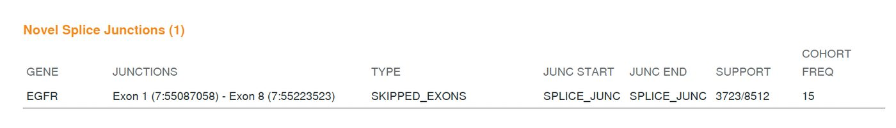
JUNCTIONS gives the start and end exon and position.| Field | Description |
|---|---|
| GENE | HGNC gene name. |
| JUNCTIONS | Start and end exon and position. |
| TYPE | Type of novel splicing — see the diagram. |
| JUNC START | Gene context at the start junction position: one of SPLICE_JUNC, EXONIC or INTRONIC. |
| JUNC END | Gene context at the end junction position: one of SPLICE_JUNC, EXONIC or INTRONIC. |
| SUPPORT | # of fragments supporting, and depth at, the splice location. |
| COHORT FREQ | # of observations in the Hartwig WTS cohort. |
Novel splice junctions are reportable if they match the gene and range of a curated EXON_DEL_DUP in the fusion knowledgebase — i.e. they recapitulate a known pathogenic exon deletion or duplication at the RNA level. The canonical example is EGFRvIII-type exon skipping.
08Immunology — HLA typing
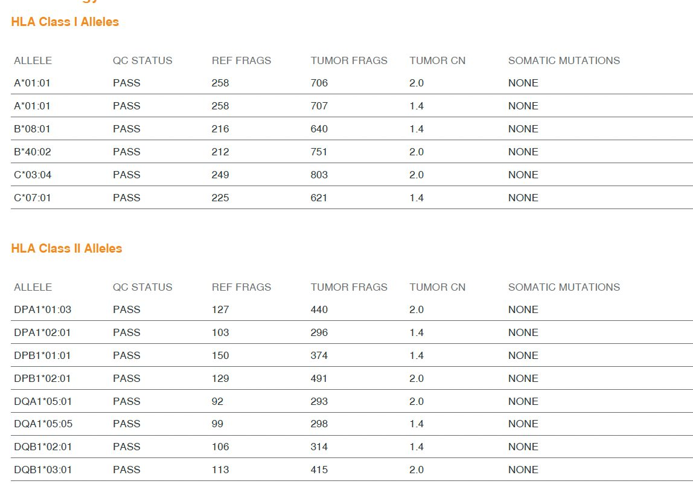
TUMOR CN and SOMATIC MUTATIONS report tumor-specific loss or mutation of an allele.Human leukocyte antigen (HLA) Class I proteins present antigens on the cell surface — HLA-A, HLA-B and HLA-C. HLA Class II present peptides on professional antigen-presenting cells; only DPA1, DPB1, DQA1 & DQB1 are evaluated.
| Field | Description |
|---|---|
| ALLELE | The specific IMGT alleles found in the patient sample. |
| QC STATUS | Either PASS or WARN — for low coverage, high support for unexpected haplotypes, or indels. |
| REF FRAGS | # of supporting fragments for the allele in the germline sample. |
| TUMOR FRAGS | # of supporting fragments for the allele in the tumor sample. |
| RNA FRAGS | # of supporting fragments for the allele in the RNA sample. Needs RNA |
| TUMOR CN | Predicted number of copies of the allele in the tumor sample. |
| SOMATIC MUTATIONS | Somatic small variant mutations found to be present in this allele. |
Why HLA typing appears in a tumor report — immune escape
Cytotoxic T cells can only recognise a neoantigen if it is presented on an HLA molecule. Tumors therefore evolve to break presentation, and the two commonest routes are both visible in this table:
- HLA loss of heterozygosity — a
TUMOR CNbelow the germline copy number for one allele means the tumor has deleted it, narrowing the repertoire of peptides it can display. - Somatic mutation of an HLA allele — entries in
SOMATIC MUTATIONS, which can disable a specific allele's function.
Either finding is relevant context when interpreting TMB or MSI as immunotherapy biomarkers: a high neoantigen load matters less if the machinery to present it has been dismantled. HLA type also determines which predicted neoepitopes are worth considering at all.
Reading an IMGT allele name
A*11:01 reads as: gene HLA-A, allele group 11, specific protein 01. Further colon-separated fields, when present, encode synonymous and non-coding differences. Two-field resolution (A*11:01) is the level at which the presented peptide repertoire is determined, and is what the report gives.
Class II evaluation is limited to DPA1, DPB1, DQA1 and DQB1 — the other Class II loci are not assessed.
09Tissue of origin (CUPPA) WGS only
CUPPA (Cancer of Unknown Primary Prediction Algorithm) predicts the tissue of origin using features derived from whole genome sequencing. The algorithm is a collection of per-feature-type logistic regressions, each of which votes, and whose outputs are then combined.
The classifiers
DNA classifiers
| Classifier | What it uses |
|---|---|
| GEN_POS | SNV counts at each genomic position (500 kb bins) to detect patterns associated with cancer-type-specific epigenetic state. |
| SNV96 | 96-trinucleotide context SNV counts to detect mutational patterns (e.g. UV radiation or smoking). The classifier does not use COSMIC signatures directly, but signature contribution percentiles relative to the Hartwig cohort are shown in the CUPPA report for information. |
| EVENT | Various cancer-type-specific mutational "events" — driver mutations, fusions, viral insertions, and so on. |
RNA classifiers Needs RNA
| Classifier | What it uses |
|---|---|
| GENE_EXP | Cancer-type-specific gene expression profiles. |
| ALT_SJ | Alternative splice junction profiles — those not annotated in Ensembl. |
Why 96 trinucleotide contexts?
There are 6 distinguishable substitution classes (C>A, C>G, C>T, T>A, T>C, T>G, referencing the pyrimidine of each Watson–Crick pair). The immediately 5′ base can be any of A, C, G, T, and so can the 3′ base. That gives 4 × 6 × 4 = 96 mutation types — the standard resolution at which mutational processes are distinguishable.
How mutation position encodes tissue of origin
Mutation rate is not uniform along the genome: it tracks replication timing and chromatin state, both of which are cell-type specific. Late-replicating, closed chromatin accumulates more mutations. Since a tumor inherits the epigenetic landscape of its cell of origin, the spatial distribution of its passenger mutations across 500 kb bins is a fingerprint of that lineage. This is what GEN_POS exploits — and it is why it works from passengers, with no need to identify a single diagnostic driver.
Reading the CUPPA report page
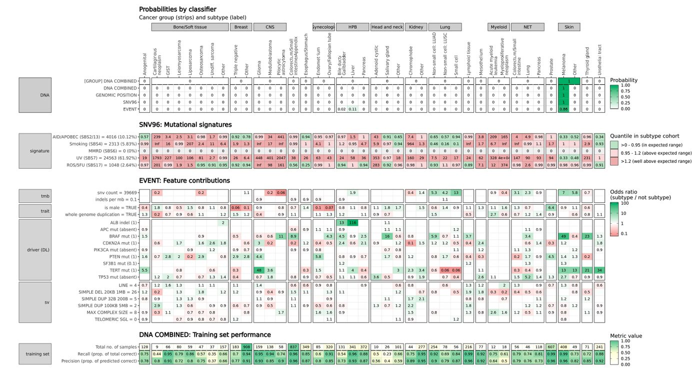
| Element | How to interpret |
|---|---|
| Probabilities | 0% = very unlikely; 100% = very likely. Shown per classifier so you can see whether they agree. |
| Quantiles | If less than 1, gives the quantile in the cohort. For values > 1, it is the multiple of the highest cohort value. |
| Odds ratios (event classifier) | Effect on cancer type probability: 1 = no change; >1 = increase; <1 = decrease. Worked example: BRAF, Melanoma = 49; BRAF, Thyroid gland = 23; 49 / 23 = 2.13× more likely to be melanoma than thyroid gland cancer. |
| Training set performance | >0.9 = very reliable; 0.75–0.9 = moderately reliable; <0.75 = potentially unreliable. This is the accuracy for that cancer type in training, not the confidence in your sample. |
First, training set performance is a property of the class, not your prediction — a 98% probability for a cancer type whose training performance is 0.6 is not a 98% answer. Second, classifier disagreement is information: a confident GENE_EXP call against a flat GEN_POS call warrants scepticism. CUPPA is a prediction to weigh against the submitted primary tumor type and clinical picture, not a replacement for either.
Tissue-of-origin prediction for panels in oncoanalyser is based on a separate classifier, vCUPPA, and is not currently available in the ORANGE report. CUPPA only runs on WG(T)S.
10Quality control
The QC section is a single-page summary of all DNA QC statistics for the sample computed in oncoanalyser. Every metric is plotted against the distribution of a reference cohort, so you are always reading your sample relative to what normal looks like.
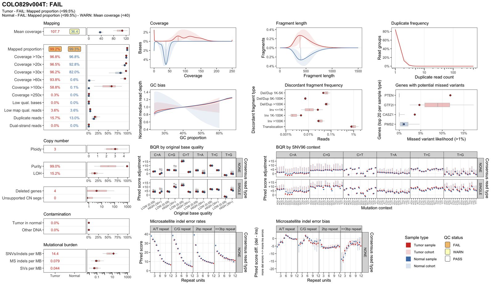
Conventions on this page
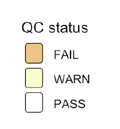
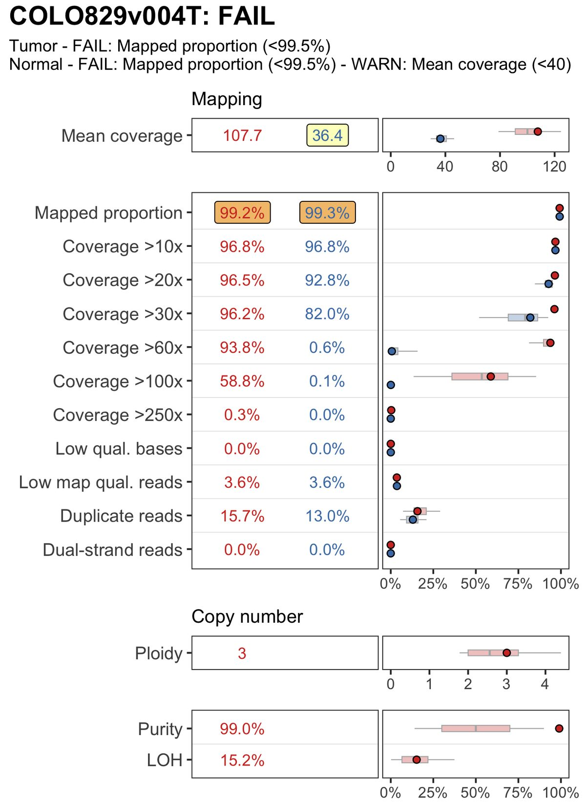
- Tumor sample statistics are shown in red. Normal sample in blue.
- Overall status:
FAILif any metric fails, elseWARNif any warns, elsePASS. - Cohort percentiles are shown as boxplots (5th, 25th/Q1, 50th/median, 75th/Q3 and 95th percentiles) or as ribbons / vertical dotted lines (5th and 95th percentiles).
- Dot / number = value in your sample; boxplot = distribution across the Hartwig cohort. If a normal sample was provided, the normal value is plotted against the cohort of normals.
For custom panels, cohort data can be generated if ≥50 samples are provided. Until then, panel metrics have no meaningful reference distribution to sit against. Also note: RNA QC is shown separately, in the RNA section.
Coverage and GC bias
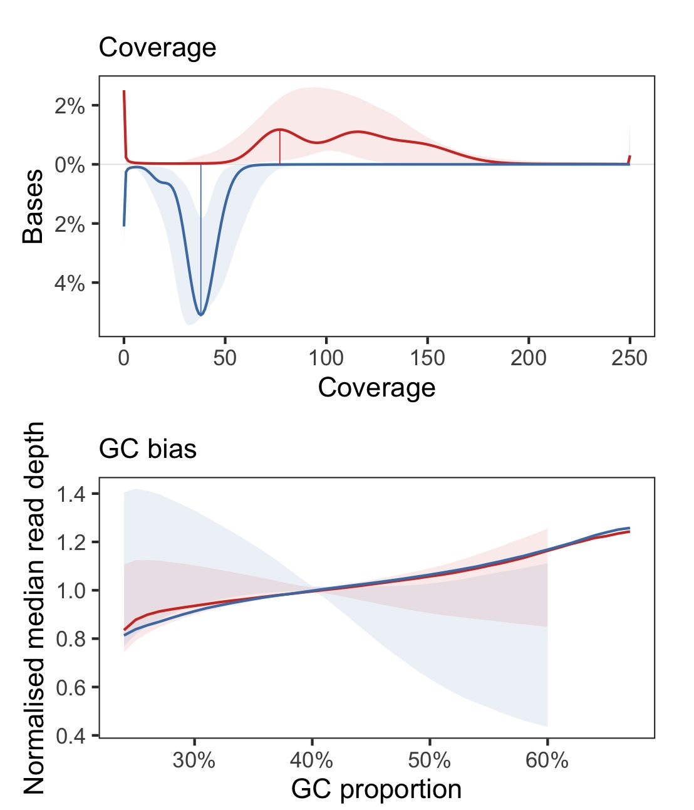
Why GC bias matters for copy number
PCR amplification and cluster generation are not GC-neutral: GC-rich and GC-poor regions amplify with different efficiency, so read depth varies with local base composition even at constant true copy number. Since COBALT depth ratios are the primary input to the copy number fit, uncorrected GC bias would be read as real copy number change.
COBALT normalises for this, and this plot shows the residual: a flat line near 1.0 across the GC range is what you want. A strong slope or U-shape means the correction is working hard, and copy number segmentation in extreme-GC regions is correspondingly less reliable.
Fragment length and discordant fragments
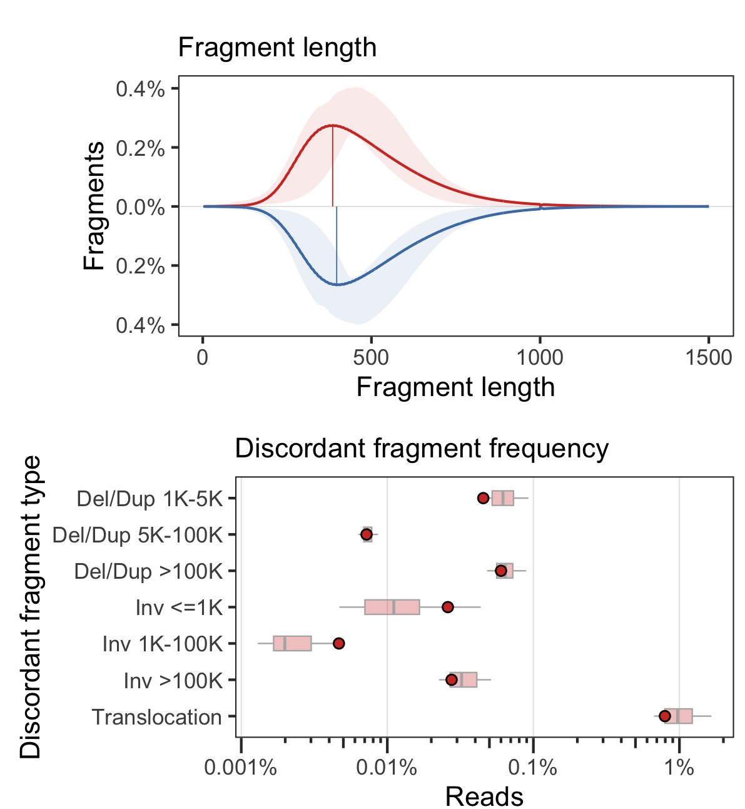
Discordant fragment type refers to the orientation/spacing of the paired-end reads, and does not necessarily represent a structural variant. Read this plot as a library-quality metric — excess discordance across all types usually indicates chimeric library artefacts rather than a rearranged genome.
Fragment length as a sample-quality readout
The fragment length distribution is one of the most informative single plots on the page. FFPE material fragments during fixation and storage, shifting the distribution short. Liquid biopsy cfDNA has a characteristic distribution around the nucleosome footprint (~167 bp) with visible periodicity. A distribution much shorter than the cohort implies fewer usable properly-paired fragments, which reduces sensitivity for both small variants and, especially, structural variants that depend on paired-end and split-read signal.
Duplicates and missed variant likelihood
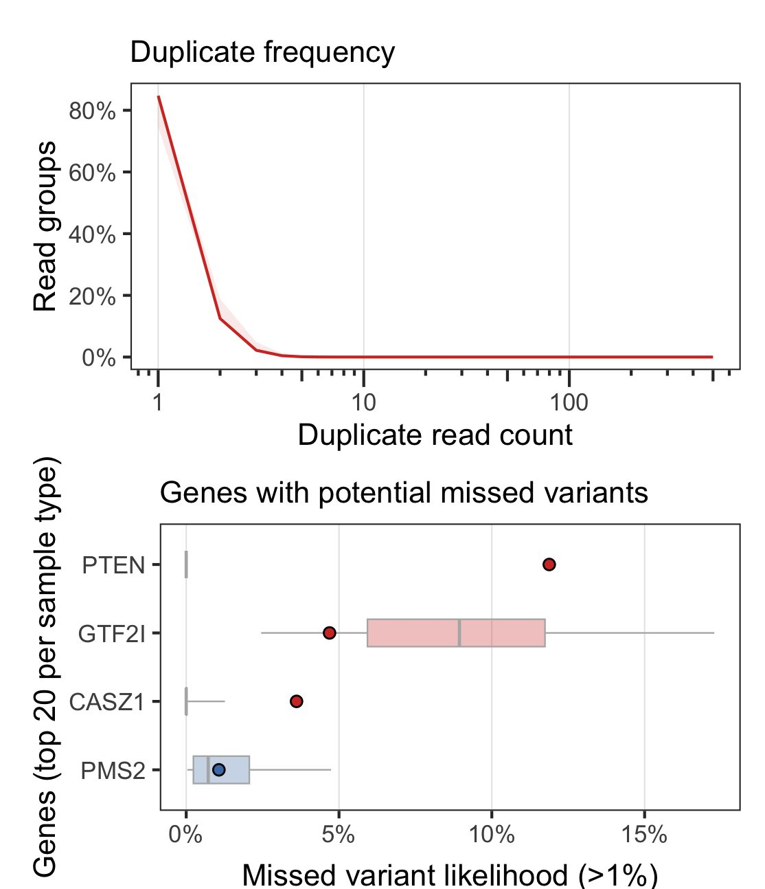
N=1 is read groups without duplicates, N≥2 read groups with duplicates. Bottom: likelihood that a variant is missed within the respective gene. Only genes (up to 20) with missed variant likelihood >1% are shown.The missed variant likelihood panel names specific genes where coverage is too thin to be confident of a negative result. If a clinically important gene appears here, "no variant reported" in that gene means not assessed, not wildtype. Check this plot before acting on any negative finding.
Base quality recalibration (BQR)
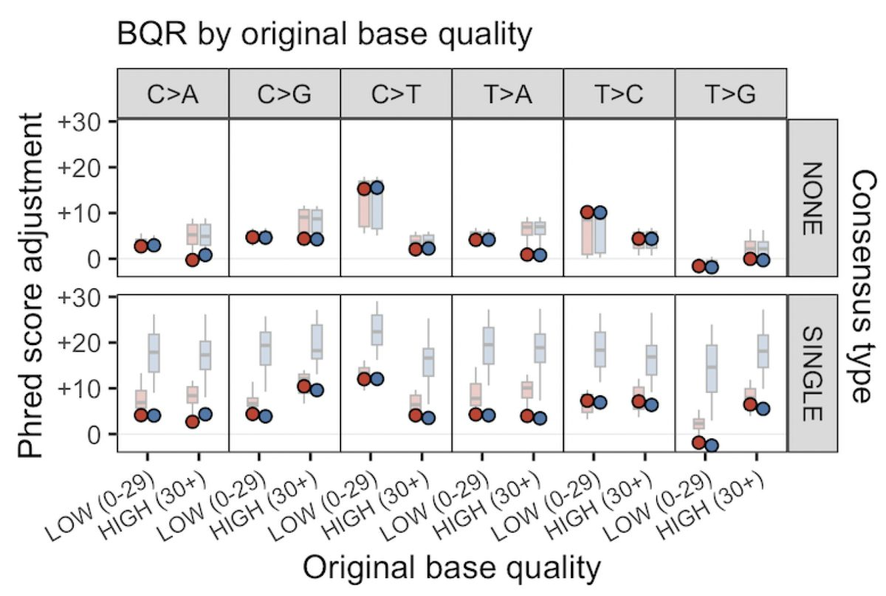
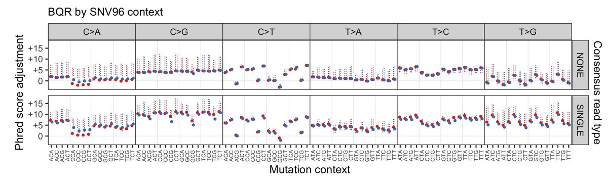
| Consensus read type | Meaning |
|---|---|
| NONE | No read deduplication (unique read). |
| SINGLE | Read deduplication based on one strand (forward or reverse). |
| DUAL | Read deduplication based on both forward and reverse strands. |
Base quality recalibration (BQR) adjusts variant base qualities to account for sequencer-specific base quality biases:
- + Base quality boosted — original quality was underestimated.
- − Base quality reduced — original quality was overestimated.
UMIs, consensus reads and why DUAL is the gold standard
When PCR duplicates of the same original molecule are collapsed into a single consensus read, errors introduced during amplification are outvoted. But an error present on the original molecule — for example FFPE-induced cytosine deamination causing a spurious C>T — survives collapsing if only one strand is observed.
DUAL consensus reads have independent observations from both strands of the original duplex. A true variant appears on both; a single-strand damage artefact does not. That is why DUAL support carries far more weight, and why the proportion of dual-strand reads is tracked as a QC metric — it is the main defence against FFPE artefacts and the basis of very-low-frequency detection in liquid biopsy.
Microsatellite indel error rates and bias
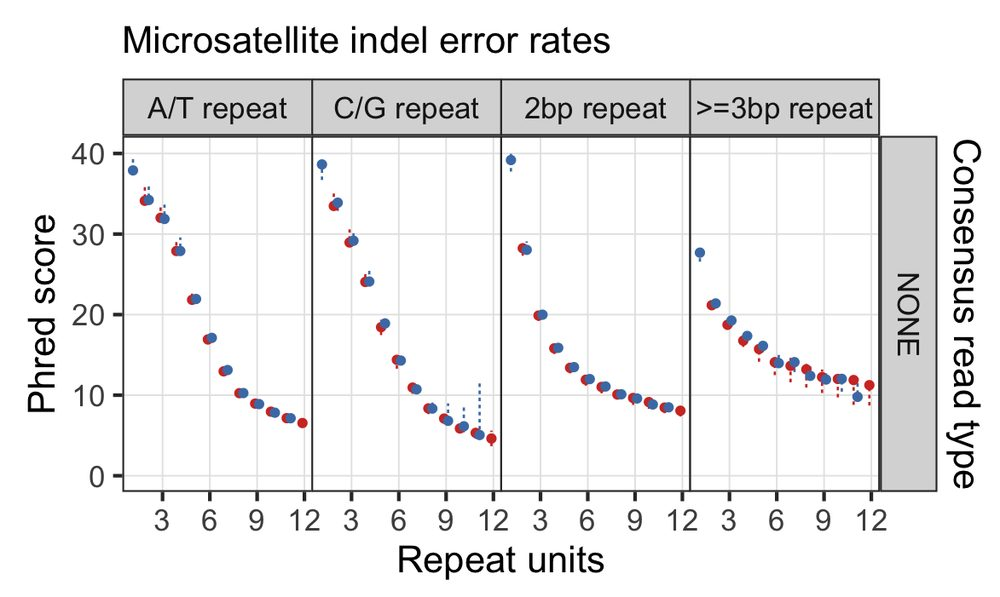
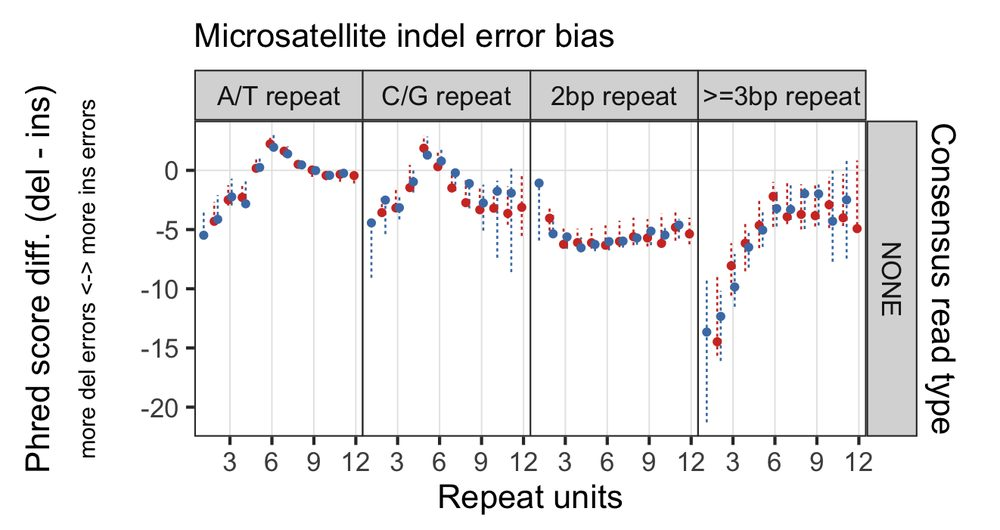
Jitter — and why this plot is the foundation of the MSI call
Polymerases slip in repeat tracts, so reads crossing a homopolymer or short tandem repeat routinely report the wrong repeat length. This sequencing artefact — jitter — is indistinguishable, read by read, from a genuine microsatellite indel. Its rate rises steeply with repeat length, which is why these plots are faceted by repeat unit count.
These plots are the empirical, per-sample error model. It is what allows a genuine MSI signal to be separated from background slippage, and therefore what the microsatellite indels per Mb biomarker rests on. A sample with unusually high jitter has a correspondingly noisier MSI estimate — worth checking before calling a borderline value around the threshold of 4.
11Purity & ploidy plots
This chapter exists to let you audit the two numbers on the front page. If the purity/ploidy fit is wrong, every copy number, biallelic call and clonality probability in the report inherits the error — so these six plots are where you check the foundation.
Copy number input CIRCOS
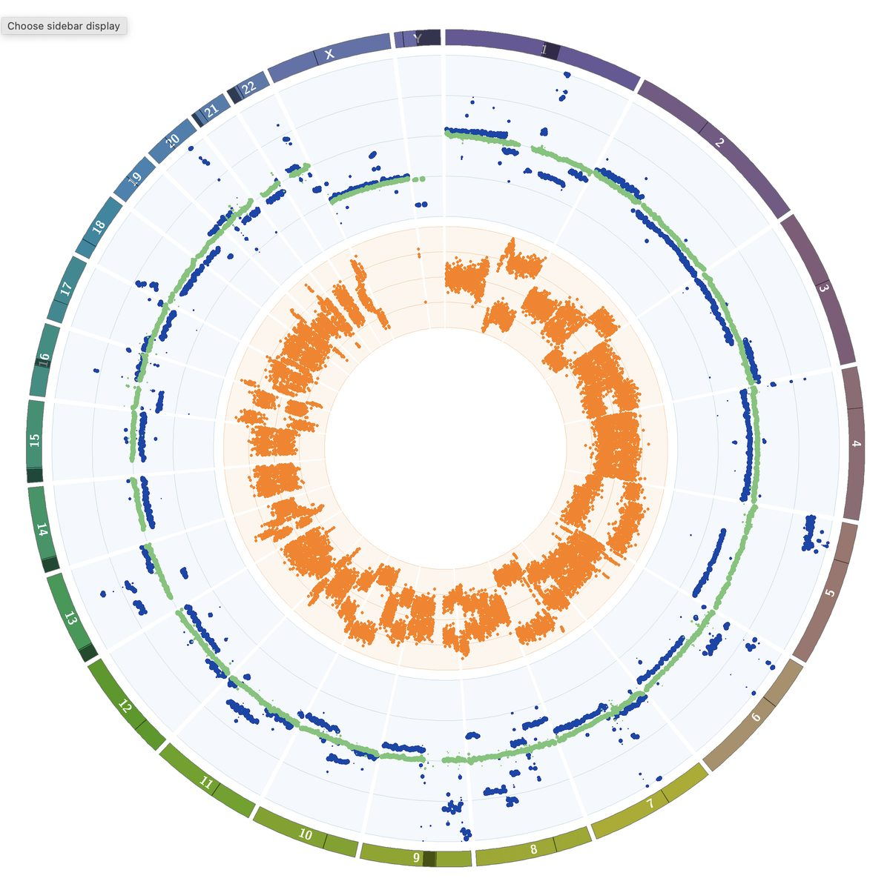
| Ring | What it shows |
|---|---|
| Depth ratio | Depth ratios of the reference (green) and tumor (blue) samples. The ratio is the GC- and expected-enrichment-normalised (for targeted) depth divided by the mean depth for the sample. For the reference, diploid normalisation has also been applied. Only regions which are high-confidence diploid in the germline are shown. |
| BAF | Observed B-allele frequency of each germline polymorphism by chromosome and position. The number of points is down-sampled to a maximum of 25k. |
In tumor-only mode, the green reference ratio is not shown.
B-allele frequency (BAF)
At a germline heterozygous SNP the patient has two different bases, one per allele. BAF is the fraction of reads carrying the "B" allele. In normal diploid tissue this is 0.5.
Deviation from 0.5 in the tumor is the signature of allelic imbalance: BAF pushed toward 0 or 1 means one allele has been lost or the other gained. Crucially, BAF is sensitive to imbalance even when total copy number is unchanged — which is what makes copy-neutral LOH detectable at all. Depth ratio gives total copy number; BAF splits it into major and minor alleles. Together they constrain purity and ploidy jointly, and that joint constraint is the entire basis of PURPLE's fit.
Copy number probability density function
The copy number PDF shows the distribution of copy number states observed, weighted by the number of BAF points in those segments. Copy numbers are sliced using colour into their respective minor allele copy number (MACN).
Generally, we expect to see clear peaks at integer copy numbers. Subclonal copy number gains and losses may occur at non-integer values. Peaks that are systematically offset from integers — e.g. sitting at 2.4 and 3.4 — are the classic sign of a mis-fitted purity, and the fix is to re-examine the sunrise plot for an alternative solution.
Somatic clonality
CLONAL column in the small variants table.This plot shows the evaluation of clonality of all somatic SNVs.
- In the top histogram, the blue bars show the number of somatic variants (y-axis) for each variant copy number (x-axis). The coloured lines show the distribution of fitted variant peaks, with red shaded peaks predicted to correspond to subclonal variants (i.e. VCN < 1).
- The bottom chart predicts the likelihood of a variant being subclonal at any given variant copy number, based on the fitted peaks in the top chart.
Sunrise plot
The sunrise plot shows the relative scoring for the full matrix of purities and ploidy solutions tested to determine the purity and ploidy fit. The best fit is marked. Solutions that score within 10% of the best score are coloured blue and are used to determine the uncertainty range for both the final purity and ploidy.
The fit is primarily based on the aneuploidy in the sample. For samples with low aneuploidy, a SOMATIC fit mode is triggered which assumes ploidy = 2 and determines purity from the AF of somatic small variants.
A tight, isolated blue region means the solution is well constrained — trust the purity and ploidy. A broad blue band, or several separated blue islands, means alternative solutions scored almost as well; the reported purity may be off by a factor (commonly 2×, with ploidy compensating), and every downstream copy number call carries that ambiguity. Read this together with integer peak alignment in the CN PDF, which is the independent check.
Minor allele copy number PDF
The minor allele PDF shows the distribution of minor allele copy numbers observed, weighted by the number of BAF points in those segments. Copy numbers are sliced using colour into their respective copy number.
As for the CN PDF, we expect clear peaks at integer minor allele copy numbers. Subclonal copy number gains and losses may occur at non-integer values. A large mass at MACN 0 is the genome-wide LOH burden that the front-page LOH proportion summarises.
Kataegis plot
A kataegis plot identifies and displays regions of localized hypermutation. The plot shows the distance between consecutive somatic base pair mutations (intermutation distance) on the y-axis (log₁₀ scale), versus the genomic position on the x-axis.
The kataegis annotation rule
Somatic variants of type C>T and C>G in a TpCpN context are annotated as showing kataegis if there are three or more mutations of that type, strand and context localised within a region with an average inter-mutation distance of ≤ 1 kb.
The annotation describes the strand it was found on, along with an id that is shared by grouped variants — so all mutations belonging to one kataegis event carry the same identifier.
What causes kataegis
The TpCpN context and the C>T / C>G substitution pair are the signature of the APOBEC family of cytidine deaminases, which act on single-stranded DNA. Because ssDNA is exposed in tracts — at resected double-strand breaks, or behind a stalled replication fork — APOBEC activity leaves mutations in tight clusters rather than scattered singly. Kataegis is therefore usually found adjacent to structural variant breakpoints, and its presence links a mutational process to a rearrangement event. It corresponds to COSMIC signatures 2 and 13 in the signature allocation table.
12Tool map — which tool produced this number?
ORANGE does not compute anything itself: it collects the output of the upstream hmftools / WiGiTS components. When a value looks wrong, this table tells you whose documentation to read.
By report section
| Report section | Tools involved | What each contributes |
|---|---|---|
| Summary / front page | PURPLE, LINX, CHORD, CUPPA, PEACH, Virus Interpreter | PURPLE supplies purity, ploidy, QC, driver counts and the genome-wide biomarkers; LINX the fusion and disruption counts; CHORD the HRD score; CUPPA the predicted cancer type; PEACH the DPYD status. |
| CIRCOS plot | PURPLE (+ LINX) | PURPLE renders the plot from its own variant, copy number and BAF outputs plus the SV set; driver gene annotations come via the driver catalog. |
| Somatic small variants | SAGE → PAVE → PURPLE | SAGE calls and filters; PAVE annotates transcript and protein impact; PURPLE adds purity-adjusted copies, biallelic, clonal, somatic and driver likelihood. |
| Copy number / arm CN | COBALT + AMBER → PURPLE | COBALT depth ratios and AMBER BAFs feed the PURPLE fit, which produces allele-specific absolute copy number and the amp/del driver calls. |
| Fusions & disruptions | ESVEE → PURPLE → LINX | ESVEE calls structural variants; PURPLE assigns junction copy number; LINX clusters and chains them, then calls fusions, disruptions and the LINX plots. |
| Viruses | VIRUSBreakend → Virus Interpreter | VIRUSBreakend detects viral presence and integration sites; Virus Interpreter filters and annotates for reporting. |
| Signatures | SIGS | Fits the sample's 96-type SNV spectrum to the COSMIC v2 SBS catalogue. |
| Germline variants | SAGE, PAVE, PURPLE, LINX (germline), PEACH | Germline calling with tumor-aware annotation; PEACH resolves pharmacogenomic haplotypes. |
| RNA | ISOFOX | Transcript abundance, fusion calling and novel splice junction detection from WTS. |
| Immunology (HLA) | LILAC | Class I/II typing with allele copy number and somatic mutation of alleles. |
| Tissue of origin | CUPPA | Per-feature logistic regressions over DNA and RNA features. |
| Quality control | BamTools / Qsee, REDUX, COBALT, ESVEE, PURPLE | Qsee aggregates metrics from the other tools and plots them against the reference cohort with warn/fail thresholds. |
| Purity & ploidy | PURPLE (from COBALT + AMBER) | All six diagnostic plots are PURPLE's own fit diagnostics. |
| Upstream of everything: REDUX — duplicate marking, consensus reads, UMI handling, read unmapping and the microsatellite jitter model. It has no section of its own but its output determines what every caller sees. | ||
Component reference
| Component | Class | Description | Docs |
|---|---|---|---|
| ORANGE | Report | PDF summary report and JSON file of all pipeline output. | README |
| PURPLE | DNA | Estimates copy number, purity and ploidy, and identifies driver events. | README · DriverCatalog |
| LINX | DNA | SV annotation, clustering & chaining, fusion and disruption calling. | README · Visualisation · Germline |
| SAGE | DNA | Point mutation variant calling and filtering; includes the TINC module. | README |
| PAVE | DNA | Point mutation annotation and gene impact. | README |
| ESVEE | DNA | Structural variant calling (assembly-based). | README |
| AMBER | DNA | Generates the tumor BAF file for PURPLE's copy number fit; also detects contamination. | README |
| COBALT | DNA | Determines read depth ratios for PURPLE's copy number fit. | README |
| REDUX | DNA | Duplicate marking, consensus reads, UMIs, read unmapping, microsatellite jitter model. | README |
| CHORD | DNA | Homologous recombination deficiency detection. | CHORD · hmftools port |
| SIGS | DNA | Fits SNV trinucleotide counts to COSMIC signature definitions. | README |
| CUPPA | DNA+RNA | Tissue of origin prediction from WGS/WTS. | README |
| LILAC | DNA+RNA | HLA class I and II typing, with allele copy number and somatic mutations. | README |
| ISOFOX | RNA | WTS transcript abundance, fusions and novel splice junctions. | README |
| PEACH | DNA | Pharmacogenomic haplotype calling from germline variants. | README |
| BamTools | QC | BAM metrics and slicing. | README |
| Qsee | QC | Reports quality-control and other sample metrics; renders the QC page. | README |
| VIRUSBreakend | External | Viral integration detection (part of the GRIDSS suite). | GRIDSS |
| Present in hmftools but not represented in the ORANGE report: TEAL (telomere length), CIDER (TCR/BCR V(D)J detection), NEO (neoepitopes), WISP (longitudinal tumor fraction), COMPAR (run comparison). PROTECT and ROSE are OncoAct clinical-reporting components and are not part of oncoanalyser. | |||
Component links point at master. Versions move independently of the pipeline version — check the release notes for the WiGiTS version bundled with your oncoanalyser release.
13FAQ & troubleshooting
Common situations, and what to check first.
"The section I expected isn't in the report"
There is no germline chapter
The report was run in tumor-only mode — check SAMPLES in the sample details. Without a matched normal there is no germline call set. Inherited variants may still appear in the somatic table; look at the SOMATIC probability column, which only exists in tumor-only reports for exactly this reason.
Note that the absence of signatures, viruses or an HRD score is a separate question — those depend on whether the run was whole-genome or targeted, not on whether a normal was provided.
There is no RNA chapter
No RNA sample was analysed — RNA is optional in oncoanalyser. Confirm via SAMPLES in the sample details. Without RNA you also lose the RNA column on small variants, RNA FRAGS on fusions and HLA alleles, and the GENE_EXP / ALT_SJ CUPPA classifiers.
No signatures, no HRD score, no viruses
Most likely the run was targeted rather than whole genome. Check PIPELINE in the sample details: it will read TARGETED rather than WHOLE GENOME.
- Signatures need genome-wide SNV counts — WGS only.
- Viruses are detected from reads that fail to map to the human reference, which a capture protocol discards — WGS only.
- HRD via CHORD needs genome-wide indel and SV signatures. For panels, a per-panel vCHORD classifier must be trained first.
No tissue of origin prediction on a panel report
Expected. CUPPA only runs on WG(T)S. Panel tissue-of-origin prediction uses a separate classifier, vCUPPA, which is not currently surfaced in the ORANGE report.
"The report has a QC warning or failure"
FAIL_NO_TUMOR — what now?
No fit with purity above ~8% could be found. Either the sample genuinely contains negligible tumor, or the fit failed. Check, in order:
- Sunrise plot — is there any well-scoring region at all, or is the whole surface flat?
- Input CIRCOS — is there visible allelic imbalance in the BAF ring? If BAF sits cleanly at 50% genome-wide, there is no aneuploidy signal to fit.
- QC page — is coverage adequate? A depth problem masquerades as a purity problem.
All downstream copy number, biallelic and clonality values should be treated as uninterpretable. Consider re-sampling with better tumor content.
WARN_LOW_PURITY — how much can I still use?
Below 20% purity, treat negative findings as uninformative and positive findings as reportable but with degraded quantitative accuracy:
- Reasonably robust: the presence of high-VAF hotspot variants; large arm-level copy number events.
- Degraded:
BIALLELICandCLONALprobabilities, absolute copy numbers, focal amp/del calls, TMB and MSI estimates. - Unreliable: absence of any finding. Check the missed variant likelihood panel for the genes you care about.
WARN_TINC or FAIL_TINC
Tumor DNA has leaked into the germline reference. The consequence is reduced somatic sensitivity: real somatic variants are filtered out as germline. Above 25% (FAIL_TINC) the somatic call set should not be relied upon.
Common causes: haematological malignancy with a blood normal, high circulating tumor DNA, or a "normal" taken too close to the tumor. The remedy is a different normal source, not a re-analysis of the same data. See the SAGE documentation for the TINC model.
WARN_GENDER_MISMATCH
Gender inferred from chrY copy number disagrees with gender inferred from chrX BAF. Before assuming a sample swap, check the chromosomal aberrations table — MOSAIC_X and KLINEFELTER are benign constitutional explanations. Loss of chromosome Y in the tumor is another common and biologically real cause.
WARN_HIGH_COPY_NUMBER_NOISE or WARN_DELETED_GENES
High CN noise (>220 segments unsupported by an SV) means the segmentation is finding boundaries the SV data does not corroborate — usually a coverage-uniformity problem. Check the GC bias and coverage plots; focal copy number calls are the ones to distrust.
>280 deleted genes genome-wide is either a genuinely catastrophic genome or, more often, an over-called deletion landscape resulting from a mis-fitted purity. Check integer peak alignment in the CN PDF first.
"How do I interpret this?"
A variant I care about is on a grey row
Grey means driver likelihood < 20% — the statistical model did not find evidence that this gene shows an excess of this variant type in the Hartwig pan-cancer cohort, given your sample's mutational burden. It does not mean the variant is benign.
Reasons to look past the grey: the sample is hypermutated (which mechanically depresses every likelihood); the tumor type is paediatric or haematological, which the model was not trained on; or the gene's relevance is established through a route the model does not capture. The report is deliberately non-curated — this is precisely the judgement it leaves to you.
The same event appears in two different tables
Expected, and informative. A partial gene deletion caused by a structural variant is legitimately both a copy number event and a disruption, so it appears in amplifications & deletions and gene disruptions. Likewise a fusion arising from a deletion appears in the fusion table while its breakends may appear as a disruption. Read them as different views of one event, not as duplicate findings.
CUPPA disagrees with the submitted primary tumor type
Work through: (1) is the training set performance for the predicted type above 0.75? (2) do the classifiers agree with each other, or is one confident and the rest flat? (3) does the event classifier point at a specific driver or fusion that is diagnostically meaningful? (4) is the CIRCOS/signature picture consistent — e.g. a UV signature supporting a melanoma call?
Note that Primary tumor is hospital-submitted metadata, so the discrepancy may lie there. Neither field is authoritative on its own.
A gene shows amplification but I'm not sure it's meaningful
Compare REL CN against ARM CN. If the arm is amplified to a similar degree, the gene was carried along by an arm-level event and is unlikely to be the selected target. A gene well above its arm baseline is focal — the interesting case. Cross-check the arm copy number table and, if a LINX plot was generated, the shape of the event.
Remember the amplification threshold is relative to ploidy, so in a whole-genome-duplicated tumor an absolute CN of 6 may not clear it.
An RNA fusion has no DNA support (or vice versa)
Both directions are common and neither invalidates the call. RNA can detect fusions whose DNA breakpoints fall in unresolvable repetitive introns, and confirms the fusion is transcribed. DNA detects rearrangements regardless of expression, including in genes silent in that tissue.
The most useful discriminator for an RNA-only call is COHORT FREQ: a junction seen repeatedly across the Hartwig WTS cohort is far more likely a recurrent artefact or unannotated normal transcript than a private driver.
Can I compare a panel TMB against a WGS TMB threshold?
Not directly. Panel TMB and TML are estimated from the rate of likely-somatic variants in coding on-target regions; WGS values are counted directly genome-wide. The same applies to MSI (estimated from panel-region repeat error rates) and HRD (needs a panel-specific vCHORD model).
Similarly, cohort boxplots on the QC page are only meaningful if a cohort exists for that panel — which requires ≥50 samples.
Purity looks implausible — can I tell if the fit is wrong?
Three independent checks, in order of usefulness:
- Sunrise plot — a broad blue band or multiple blue islands means alternative solutions scored nearly as well. Watch for the classic 2×-purity / half-ploidy ambiguity.
- CN PDF — peaks should land on integers. Systematically offset peaks indicate a mis-fitted purity.
- Somatic clonality — the main clonal peak should sit near an integer VCN. A peak at, say, 1.5 suggests the purity used to compute VCN is off.
Also check FIT METHOD: a SOMATIC fit means the sample had too little aneuploidy to constrain ploidy, so ploidy was assumed to be 2.
Practical
Where do I get the underlying numbers rather than the PDF?
ORANGE writes a JSON alongside the PDF containing the full datamodel — every value in the report plus fields that are not rendered. In an oncoanalyser run these are at <group_id>/orange/<tumor_id>.orange.{pdf,json}. Per-tool TSV and VCF outputs sit in each tool's own output directory. See the oncoanalyser output documentation.
How do I change which genes are reported?
Edit the driver gene panel — common/DriverGenePanel.{37,38}.tsv in the resource bundle. It controls which genes are reported, which variant classes are reported per gene, the ONCO/TSG classification (which changes the driver likelihood maths), and optional per-gene amplification thresholds.
Be aware that changing the panel changes the calibration of driver likelihood, not just the gene list. See DriverCatalog.md and gene-utils.
The thresholds in this guide don't match my report
Thresholds and chapter composition change between versions, and several are configurable. Check PIPELINE VERSION on the front page, then read the documentation at the matching release tag rather than master. Anything expressed as a multiple of ploidy or as a per-gene value is likely to be set in the driver gene panel rather than hard-coded.
Can I use this report for a clinical decision?
Not as it stands. ORANGE is explicitly non-curated and Research Use Only. It is designed as input to a curation process or Molecular Tumor Board — not as the output of one. Curated reporting is the function of the OncoAnalyserDx SaaS platform.
Verification, validation and regulatory compliance for any given configuration are the user's responsibility.
14References & further reading
Publications
| Topic | Citation |
|---|---|
| Hartwig WGS cohort (driver logic training set) | Priestley P, et al. Pan-cancer whole-genome analyses of metastatic solid tumours. Nature 2019;575:210–216. doi:10.1038/s41586-019-1689-y |
| LINX | Shale C, et al. Unscrambling cancer genomes via integrated analysis of structural variation and DNA copy number. Cell Genomics 2022;2(4):100112. doi:10.1016/j.xgen.2022.100112 |
| CHORD (HRD) | Nguyen L, et al. Pan-cancer landscape of homologous recombination deficiency. Nature Communications 2020;11:5584. doi:10.1038/s41467-020-19406-4 |
| CUPPA | Schipper LJ, et al. Complete genomic characterization in patients with cancer of unknown primary origin in routine diagnostics. ESMO Open 2022;7(6):100611. doi:10.1016/j.esmoop.2022.100611 (PMID 36463731) |
| LILAC (HLA) | Martínez-Jiménez F, et al. Genetic immune escape landscape in primary and metastatic cancer. Nature Genetics 2023;55:820–831. doi:10.1038/s41588-023-01367-1 |
| Mutational signatures (SNV colour scheme, 96 contexts) | Alexandrov LB, et al. Signatures of mutational processes in human cancer. Nature 2013;500:415–421. doi:10.1038/nature12477 |
| Kataegis | Nik-Zainal S, et al. Mutational processes molding the genomes of 21 breast cancers. Cell 2012;149:979–993. doi:10.1016/j.cell.2012.04.024 |
| VIRUSBreakend | Cameron DL, et al. VIRUSBreakend: viral integration recognition using single breakends. Bioinformatics 2021;37:3115–3119. doi:10.1093/bioinformatics/btab343 |
| GRIDSS2 (predecessor SV caller) | Cameron DL, et al. GRIDSS2: comprehensive characterisation of somatic structural variation. Genome Biology 2021;22:202. doi:10.1186/s13059-021-02423-x |
| nf-core | Ewels PA, et al. The nf-core framework for community-curated bioinformatics pipelines. Nature Biotechnology 2020;38:276–278. doi:10.1038/s41587-020-0439-x |
| Nextflow | Di Tommaso P, et al. Nextflow enables reproducible computational workflows. Nature Biotechnology 2017;35:316–319. doi:10.1038/nbt.3820 |
Several components — including SAGE, PAVE, ESVEE, ISOFOX, AMBER, COBALT, REDUX, SIGS, PEACH and ORANGE itself — have no standalone publication. Cite them as software with their GitHub URL, with Priestley et al. 2019 as the pipeline reference where a citation is required.
External databases & standards
| Resource | Used for | Link |
|---|---|---|
| COSMIC Mutational Signatures v2 | SBS signature definitions and etiologies used in the signature table | signatures_v2 |
| COSMIC Signatures (current) | Current catalogue — numbering differs from v2 | cancer.sanger.ac.uk |
| gnomAD | Germline population allele frequencies | gnomad.broadinstitute.org |
| ClinVar | Submitted clinical variant interpretations | ncbi.nlm.nih.gov/clinvar |
| IPD-IMGT/HLA | HLA allele nomenclature | ebi.ac.uk/ipd/imgt/hla |
| HGVS nomenclature | Variant naming standard for the HGVS column | hgvs-nomenclature.org |
| Ensembl | Transcript models and biotypes used in fusion rules | ensembl.org |
| HGNC | Approved gene symbols | genenames.org |
| CPIC / ClinPGx | DPYD – fluoropyrimidine dosing guidance | clinpgx.org |
Documentation
| What | Where |
|---|---|
| hmftools / WiGiTS | github.com/hartwigmedical/hmftools |
| ORANGE + example reports | orange/README.md |
| ORANGE user manual (PDF) | orange_user_manual.pdf |
| oncoanalyser pipeline | nf-co.re/oncoanalyser · github.com/nf-core/oncoanalyser |
| Usage & parameters | usage · parameters |
| Output file layout | output docs |
| Reference / resource data | README_RESOURCES.md · download URLs |
| Driver logic & gene panel | DriverCatalog.md · gene-utils |
| SV clustering rules | LINX › clustering of SVs into events |
| Hartwig Medical Foundation | hartwigmedicalfoundation.nl |
15Glossary
- AF allele frequency
- Fraction of reads at a site carrying the alternate allele. In the report this is the raw, uncorrected value; the purity- and ploidy-adjusted equivalent is variant copy number. See small variants.
- Allelic imbalance
- Unequal representation of the two parental alleles at a locus. Detected via BAF deviating from 0.5, and quantified by MACN.
- AMBER
- hmftools component that generates the tumor BAF file at germline heterozygous sites for PURPLE's copy number fit, and detects contamination. Docs
- AMP / DEL / HET_DEL / LOH
- Copy number event types in the amplifications & deletions table: amplification, homozygous deletion, heterozygous deletion, and copy-neutral loss of heterozygosity.
- Aneuploidy
- Departure from an integer-balanced diploid karyotype. The pattern of aneuploidy is what allows PURPLE to fit purity and ploidy jointly; samples with little aneuploidy fall back to the
SOMATICfit method. - APOBEC
- Family of cytidine deaminases acting on single-stranded DNA, producing C>T and C>G changes in a TpCpN context. The mechanism behind kataegis and COSMIC signatures 2 and 13.
- Arm CN
- Mean copy number of the chromosome arm containing a gene. Comparing it against the gene's REL CN distinguishes focal from arm-level events. See arm copy number.
- BAF B-allele frequency
- At a germline heterozygous SNP, the fraction of reads carrying the "B" allele — 0.5 in normal diploid tissue. Deviation reveals allelic imbalance even when total copy number is unchanged, which is what makes copy-neutral LOH detectable. Measured by AMBER. See the input CIRCOS.
- Biallelic
- Both copies of a gene affected, so no wildtype allele remains. Reported as a probability derived from copy number and purity. Decisive for tumor suppressors (Knudson's two-hit model) and it changes the driver likelihood calculation. See biallelic likelihood.
- BND
- Structural variant type: a breakend pair joining two different chromosomes — a translocation.
- BQR base quality recalibration
- Adjustment of variant base qualities to correct sequencer-specific biases. + = quality boosted, − = quality reduced. See the BQR plots.
- Breakend / breakpoint
- A breakend is one side of a structural variant junction; a breakpoint is the junction itself. A single breakend with no resolvable partner is typed
SGL. - Chimeric rate
- RNA QC metric: proportion of genic fragments whose other splice site is inverted, inter-chromosomal, or more than 500 kb away. See RNA QC.
- CHORD
- Logistic-regression classifier predicting HR deficiency from indel and SV signatures in WGS. Score 0–1; >0.5 is HRD-positive. The panel equivalent is vCHORD. Docs
- CIRCOS
- Circular whole-genome plot with one concentric ring per event class: chromosomes, SNVs, INDELs, copy number, MACN, and structural variants at the centre. See the CIRCOS guide.
- Cis-phased
- Two variants on the same physical allele. Marked with an asterisk on the position. Two truncating variants in trans inactivate both copies; in cis they leave one intact.
- ClinVar
- NCBI archive of submitted clinical variant interpretations, surfaced in the germline small variants table. An aggregation of others' assertions, not an independent Hartwig classification. ClinVar
- Clonal / subclonal
- Clonal = present in essentially every tumor cell (an early event). Subclonal = present in only a fraction (a later event in one lineage). Determined by peak fitting in the variant copy number distribution; peaks below 0.85 copies are subclonal.
- COBALT
- hmftools component computing GC-normalised read depth ratios for PURPLE's copy number fit. Docs
- Cohort frequency
- Number of observations of an RNA fusion or splice junction across the Hartwig WTS cohort. High values usually indicate a recurrent artefact or unannotated normal transcript rather than a private driver.
- Consensus read
- A single read synthesised from PCR duplicates of one original molecule. Types:
NONE(no deduplication),SINGLE(one strand),DUAL(both strands). DUAL support is the strongest evidence, because single-strand damage artefacts such as FFPE deamination do not appear on both strands. Produced by REDUX. - COSMIC
- Catalogue of Somatic Mutations in Cancer. The report uses the v2 SBS signature catalogue (signatures 1–30); COSMIC's live site is at v3.x, so numbering will not match. v2 archive
- CUPPA
- Cancer of Unknown Primary Prediction Algorithm — predicts tissue of origin from WGS(+WTS) features using per-feature logistic regressions (
GEN_POS,SNV96,EVENT,GENE_EXP,ALT_SJ). WGS only. See tissue of origin. - Depth ratio
- GC- and enrichment-normalised read depth divided by the sample's mean depth. The primary copy number signal, computed by COBALT. See input CIRCOS.
- Discordant fragment
- A read pair whose orientation or spacing departs from expectation. Not necessarily evidence of a structural variant — read as a library-quality metric. See QC plots.
- dN/dS
- Ratio of non-synonymous to synonymous mutation rates. An excess of non-synonymous change indicates positive selection, and is the statistical basis of driver likelihood for non-hotspot variants. Trained on the Hartwig WGS pan-cancer cohort — adult solid tumors only.
- DPYD
- Gene encoding dihydropyrimidine dehydrogenase, which clears fluoropyrimidines (5-FU, capecitabine). Reduced-function haplotypes carry substantial toxicity risk. Currently the only gene in the pharmacogenetics table.
- Driver gene panel
- Configuration file (
DriverGenePanel.{37,38}.tsv) listing reportable genes with per-variant-type flags, the ONCO/TSG classification, and optional per-gene amplification thresholds. Drives report content and driver likelihood calibration. See configuration. - Driver likelihood
- Estimate between 0 and 1 that a variant is a driver. Hotspots, biallelic nonsense/splice in TSGs, and in-frame indels outside repeats in oncogenes get 1; the rest are scored from dN/dS excess and a TMB-aware Bayesian model. Values <20% render on a grey background. See the model.
- DUP / DEL / INV
- Structural variant types: tandem duplication, deletion, inversion.
- ESVEE
- Current hmftools structural variant caller (assembly-based), feeding PURPLE and LINX. Docs
- EVENT classifier
- CUPPA DNA classifier using cancer-type-specific mutational events — driver mutations, fusions, viral insertions. Its contributions are shown as odds ratios.
- EXON_DEL_DUP
- Curated pathogenic exon deletion or duplication in the fusion knowledgebase. Also the reportability criterion for novel splice junctions.
- FFPE
- Formalin-fixed paraffin-embedded tissue. Fixation fragments DNA and causes cytosine deamination, producing artefactual C>T changes — which is why DUAL consensus read support and the fragment length plot matter for FFPE inputs.
- Fit method
- How purity and ploidy were determined:
NORMAL(from aneuploidy — preferred),SOMATIC(ploidy assumed 2, purity from somatic variant AFs), orNO_TUMOR. See sample details. - Focal vs arm-level
- A focal copy number event is localised and stands out against its arm baseline — more likely selected. An arm-level event carries many genes along passively. Compare
REL CNwithARM CN. - Fusion
- Juxtaposition of two genes by a structural rearrangement, potentially producing a chimeric transcript. Typed
KNOWN_PAIR,KNOWN_ENHANCER_PAIR,KNOWN_EXON_DEL_DUP, orPROMISCUOUS_3/5. See fusions. - GC bias
- Depth variation driven by local base composition rather than true copy number. Corrected by COBALT; the residual is plotted in QC.
- GEN_POS
- CUPPA DNA classifier using SNV counts in 500 kb bins. Works because mutation density tracks replication timing and chromatin state, which are cell-type specific.
- gnomAD
- Genome Aggregation Database — population allele frequencies, the first sanity check on any germline call. gnomAD
- HGVS
- Standard nomenclature for describing sequence variants relative to a reference transcript — the
c.(coding) andp.(protein) forms in theHGVScolumn. Standard - HLA
- Human leukocyte antigen. Class I (HLA-A, -B, -C) present antigens on all nucleated cells; Class II (here DPA1, DPB1, DQA1, DQB1) on professional antigen-presenting cells. Tumor-specific HLA loss or mutation is an immune escape mechanism. Typed by LILAC. See immunology.
- Hotspot
- The exact variant (chromosome, position, ref, alt) matches a curated known pathogenic or likely pathogenic variant. Automatically assigned driver likelihood 1, and treated as
HIGHsomatic likelihood in tumor-only mode. - HRD homologous recombination deficiency
- Loss of the HR double-strand break repair pathway, often via BRCA1/2. Inferred from the genomic scar (deletions with microhomology, 1–100 kb duplications) by CHORD, not from the presence of a gene variant. See HR deficiency.
- IMGT allele
- HLA allele name such as
A*11:01: gene, allele group, specific protein. Two-field resolution determines the presented peptide repertoire. IPD-IMGT/HLA - INDEL
- Short insertion or deletion, <50 bp in the CIRCOS INDEL ring. Coloured yellow (insertion), red (deletion), green (deletion with microhomology).
- Inframe / out-of-frame
- Whether a fusion preserves the reading frame across the junction. Out-of-frame fusions are still reported because they can inactivate the 3′ gene. Skipped exons means frame is restored by omitting exons.
- ISOFOX
- hmftools RNA component: transcript abundance, fusion calling and novel splice junction detection. Docs
- JCN junction copy number
- Number of copies of a structural variant junction present in each tumor cell — the copy number of the junction itself, not of the flanking sequence.
- Jitter
- Polymerase slippage causing reads to report the wrong repeat length in microsatellites. Indistinguishable read-by-read from a real microsatellite indel, so an empirical per-sample jitter model (built by REDUX) is what makes the MSI call possible. See jitter QC plots.
- Kataegis
- Localised hypermutation: ≥3 C>T or C>G mutations in a TpCpN context on the same strand within a region averaging ≤1 kb inter-mutation distance. Caused by APOBEC activity on single-stranded DNA, usually near SV breakpoints. See kataegis plot.
- Klinefelter
- Constitutional sex chromosome aneuploidy (XXY), detectable in the chromosomal aberrations table and a benign explanation for
WARN_GENDER_MISMATCH. - LILAC
- hmftools component for HLA class I/II typing with allele copy number and somatic mutation detection. Docs
- LINX
- hmftools component that annotates, clusters and chains structural variants into events, reconstructs derivative chromosomes, and calls fusions and homozygous disruptions. Also produces the per-driver LINX plots. Docs · Guide
- LOH loss of heterozygosity
- Loss of one parental allele. Copy-neutral LOH (2+0) has normal total copy number and is only detectable via BAF/MACN. The route to biallelic inactivation of a tumor suppressor when combined with a variant on the other allele. Reported by default only for MMRd- and HRD-associated genes.
- MACN minor allele copy number
- Copy count of the less frequent (or lost) allele at a locus. Normal expectation is 1. Below 1 = LOH; above 1 = amplification of both alleles. Distinguishes 1+1 from 2+0, which total copy number cannot. See MACN ring.
- MISALLOC
- Row in the signature table counting somatic variants that could not be assigned to any known signature. A large fraction means the decomposition fit is poor.
- Missed variant likelihood
- QC estimate, per gene, of the probability that a variant present in the sample was not detected. Only genes above 1% are shown (up to 20). The check to run before trusting any negative finding. See QC plots.
- MMR mismatch repair
- DNA repair system (MLH1, MSH2, MSH6, PMS2) that corrects replication errors. Its failure causes microsatellite instability. See MSI.
- MSI / MSS
- Microsatellite instable (≥4 microsatellite indels per Mb) or stable (<4). Counted directly for WGS; estimated from panel-region repeat error rates for targeted assays. An important predictive biomarker for immunotherapy response.
- Novel splice junction
- An RNA splice junction not annotated in Ensembl. Types:
MIXED_TRANSCRIPT,NOVEL_EXON,SKIPPED_EXON,NOVEL_5_PRIME_SS,NOVEL_3_PRIME_SS,INTRONIC,INTRONIC_TO_EXONIC,NOVEL_INTRON, and retained intron. Reportable when matching a curatedEXON_DEL_DUP. See novel splice junctions. - Odds ratio CUPPA event classifier
- Effect of a feature on cancer type probability: 1 = no change, >1 = increase, <1 = decrease. Ratios between two cancer types give the relative preference — e.g. BRAF 49 (melanoma) / 23 (thyroid) = 2.13× more likely melanoma.
- ONCO oncogene
- Driver gene panel classification for genes acting through gain of function. In-frame indels outside repeat contexts get driver likelihood 1. Contrast TSG.
- ORANGE
- Oncogenic Results of Analyzing the Genome — the hmftools component that assembles every upstream tool's output into a single PDF and JSON. Docs
- PAVE
- hmftools component annotating point mutations with transcript and protein impact. Docs
- PDF probability density function (plots)
- In the purity chapter, the CN PDF and MACN PDF show the distribution of observed copy number states weighted by BAF point count. Clear integer peaks indicate a good fit.
- PEACH
- hmftools component calling pharmacogenomic haplotypes from germline variants. Docs
- Ploidy
- Average number of copies of each chromosome in the tumor cells; 2 for a normal diploid genome. Amplification thresholds are expressed relative to it, so a whole genome duplication rescales them.
- Promiscuous partner
- A gene that recurs as a fusion partner with many different counterparts. Novel pairings involving one are reported (typed
PROMISCUOUS_3/5) but with LOW driver likelihood, since the specific pair is uncurated. - PURPLE
- The central hmftools component: fits purity, ploidy and allele-specific copy number from COBALT depth ratios and AMBER BAFs, then calls driver events. Its QC gates most of the report. Docs
- Purity
- Fraction of cells in the sequenced sample that are tumor cells. Below 20% (
WARN_LOW_PURITY) negative findings become uninterpretable and quantitative values degrade. - Qsee
- hmftools component that aggregates QC metrics from PURPLE, BamTools, COBALT, ESVEE and REDUX and plots them against a reference cohort with warn/fail thresholds — it renders the QC page. Docs
- Quantile CUPPA
- If less than 1, the quantile within the cohort; for values above 1, the multiple of the highest cohort value.
- REDUX
- hmftools component handling duplicate marking, consensus reads, UMIs, read unmapping and the microsatellite jitter model. No section of its own, but its output determines what every caller sees. Docs
- REL CN
- Gene copy number relative to tumor ploidy (
MIN_CN / PLOIDY). The quantity amplification and arm-level thresholds are expressed in. For male X and Y, computed relative to ploidy / 2. - SAGE
- hmftools point mutation caller and filter; also contains the TINC module. Docs
- SGL
- Single breakend structural variant — only one side of the junction could be resolved.
- Signature SBS
- Characteristic distribution across the 96 trinucleotide substitution types left by a mutational process. Signature analysis attributes mutations to reference distributions; it does not measure exposure. Rule of thumb for significance: >20% or >2000 variants. See signatures.
- SIGS
- hmftools component fitting the sample's SNV trinucleotide counts to the COSMIC signature catalogue. Docs
- SNV96
- The 96 trinucleotide mutation contexts (6 substitution classes × 4 upstream bases × 4 downstream bases). Used by the CUPPA
SNV96classifier and in the BQR plots. - Somatic likelihood
- Tumor-only Probability that a variant is somatic rather than inherited, from comparing its AF against expected germline and somatic VAFs given purity and ploidy. Reported as
HIGH,MEDorLOW. See the rules. - Sunrise plot
- Heatmap of relative score across the full purity × ploidy solution matrix. Solutions within 10% of the best are blue and define the uncertainty range. The single best plot for judging fit confidence. See sunrise plot.
- TINC tumor in normal contamination
- Tumor DNA present in the germline reference sample. Reduces somatic sensitivity, because real somatic variants get filtered as germline.
WARNabove 0.5%,FAILabove 25%. Estimated within SAGE. - TMB tumor mutational burden
- Density of all small variant mutations per Mb. High if ≥10. Counted directly for WGS; estimated from coding on-target regions for panels. Also modulates driver likelihood. See TMB and TML.
- TML tumor mutational load
- Count of somatic missense mutations genome-wide. High if ≥140. Tracks potential neoepitope supply more directly than TMB.
- TPM transcripts per million
- Length- and depth-normalised expression measure. Percentiles in the report are relative to the Hartwig pan-cancer WTS cohort, not a matched-tissue cohort. See high expression.
- TSG tumor suppressor gene
- Driver gene panel classification for genes acting through loss of function. Biallelic status is taken into account, multiple mutations give additive likelihoods, and biallelic nonsense or canonical splice variants get driver likelihood 1. Contrast ONCO.
- UMI unique molecular identifier
- Molecular barcode allowing PCR duplicates of the same original molecule to be grouped into a consensus read. Handled by REDUX.
- Undisrupted CN
- Number of copies of a gene unaffected by a given disruption in each tumor cell. Reaching zero means no intact copy remains — a homozygous disruption. See gene disruptions.
- Unspliced rate
- RNA QC metric: proportion of genic fragments supporting intronic regions, which may reflect pre-spliced transcript or DNA contamination.
- VCN variant copy number
- Number of copies of a variant allele in the average tumor cell, after purity and ploidy correction — the first number in the
COPIEScolumn. VCN below ~0.85 indicates subclonality. - vCHORD / vCUPPA
- Panel-specific counterparts to CHORD and CUPPA. vCHORD is an image-based HRD classifier trained per panel; vCUPPA predicts tissue of origin for panels but is not currently surfaced in ORANGE.
- VIRUSBreakend
- External tool (GRIDSS suite) detecting viral presence and integration sites; results are filtered and annotated by Virus Interpreter for the virus table. Docs
- WGD whole genome duplication
- A single event doubling the entire karyotype, pushing ploidy toward 4. Rescales every ploidy-relative threshold in the report, so an absolute copy number of 2 can represent a relative loss. Reported as
Whole genome duplicatedon the front page. - WiGiTS
- The Hartwig genomics toolkit — the current branding of the
hmftoolscomponent suite. Its version is independent of the oncoanalyser pipeline version. - WTS whole transcriptome sequencing
- RNA-seq of the full transcriptome. The reference cohort for RNA percentiles and cohort frequencies is the Hartwig pan-cancer WTS cohort.